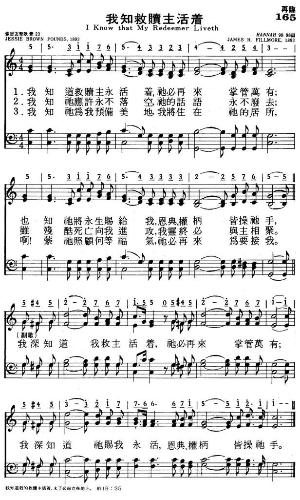

0193
我知我救贖主活著 I Know That My Redeemer Liveth DUKE STREET
|
|
|
|
1 I know that my Redeemer liveth,
And on the earth again shall stand;
I know eternal life He giveth,
That grace and power are in His hand.
Chorus:
I know, I know that Jesus liveth,
And on the earth again shall stand;
I know, I know that life He giveth,
That grace and power are in His hand.
2 I know His promise never faileth,
The word He speaks, it cannot die;
Tho' cruel death my flesh assaileth,
Yet I shall see Him by and by.
Chorus]
3 I know my mansion He prepareth,
That where He is there I may be;
Oh, wondrous thought, for me He careth,
And He at last will come for me.
[Chorus]
Source: Baptist Hymnal 2008
#352
|
我知道救贖主永活著，祂必再來掌管萬有；
也知祂將永生賜給我，恩典、權柄在祂手中，
我深知道，我救主活著，祂必再來掌管萬有；
我深知道祂賜我永活，恩典、權柄在祂手中。
我知祂應許永不落空，祂的話語永不廢去；
雖殘酷死亡向我進攻，我靈終必與祂相聚。
我深知道，我救主活著，祂必再來掌管萬有；
我深知道祂賜我永活，恩典、權柄在祂手中。
我知祂為我預備美地，我將住在祂的居所，
啊！蒙祂照顧何等福氣，祂必再來為要接我。
我深知道，我救主活著，祂必再來掌管萬有；
我深知道祂賜我永活，恩典、權柄在祂手中。 |
|


https://hymnary.org/hymn/BH2008/page/498 |
| |
|
http://www.hymncompanions.org/Oct/04/stream.php
我知我救贖主活著
I Know That My Redeemer Liveth
我知道救贖主永活著，祂必再來掌管萬有；
也知祂將永生賜給我，恩典、權柄皆操祂手。
我知祂應許永不落空，祂的話語永不廢去；
雖殘酷死亡向我進攻，我靈終必與主相聚。
（副歌）
我深知道，我救主活著，祂必再來掌管萬有；
我深知道祂賜我永活，恩典、權柄皆操祂手。
 (請點耳機收聽)
(請點耳機收聽)
約伯在苦難中，竟能說：「我知道我的救贖主活著。」在他勝過試煉後，神加倍的賜福給他。
這首詩歌是費爾模（James Henry Fillmore, 見七月廿四日）的復活清唱劇「希望的傳信者」（Hope’s
Messenger）中的一曲。 歌詞由龐絲（Jessie Brown Pounds, 1861-1921）填寫。

龐絲是美國俄亥俄州人，十五歲時，就開始在教會刊物投稿。
她為費爾模寫作聖詩達三十年之久。 她的丈夫是一位牧師。

另有一首「我知我救贖主長存」（I Know That My Redeemer
Lives）是梅理（Samuel Medley, 1738-1709）所作，也是根據約伯書19:25經文。 歌詞如下：
我知我救贖主長存，他賜安全帶來喜樂。
他永長活雖經死路，他是我永遠復活主。
因他長活，我得他愛，今日在天為我代求。
他永長活使我滿足，他永遠是隨時幫助。
因他長活，賜我需要，因他長活能勝死權。
他永長活安排佳處，帶領我永在天家住。
因他長活，應得尊榮，是我救主永不改變。
何等喜樂何等安全，復活救主使我安然。
(請點耳機收聽)
韓德爾（George Frederick Handel, 見十二月廿五日）在他的歌劇事業失敗後，情緒低落，了無生趣；在他正覺得生不如死時，收到一首友人的詩，描述主耶穌被人藐視、厭棄、被釘十架及復活，其中有一句「我知道我的救贖主活著」，深深地安慰了他；在感動中，似乎天門為他敞開，他聽到「哈利路亞」的曲調，於是他把這詩寫成「彌賽亞」神曲，在短短的廿四天內完成了這曠世鉅作。
中英文聖詩集參考
英文歌名 I
Know That My Redeemer Liveth
頌主新歌 165
頌主新歌(中英雙語) 149
新聖詩 298
聖徒詩集 150
讚美 95
世紀讚頌 227
校園詩歌I 310
校園詩歌II 248
讚美詩(新編)補充本 83
https://wordwisehymns.com/2013/01/14/i-know-that-my-redeemer-liveth/
Words: Jessie H. Brown Pounds (b. Aug. 31, 1861; d. Mar. 3, 1921)
Music: Hannah, by James Henry Filmore, Sr. (b. June 1, 1849; d. Feb. 8, 1936)
Links: Wordwise Hymns The Cyber Hymnal
Note: The words of Job in Job 19:25, forming the title and first line of this
song, are significant to the story of Job himself, and to all of us. It’s not
surprising, therefore, that there’ve been a number of hymns by the same name.
The Cyber Hymnal lists an excellent one by Samuel Medley, and a couple of
others. The text is also used by George Frederick Handel, in his Messiah. Jessie
Brown’s song was published in 1893, as part of an Easter cantata; it was first
printed in a hymn book in 1896 (the year of her marriage to Pastor John Pounds).
As noted above, the opening declaration of this hymn is significant in the
book of Job. He had been enduring the most terrible and excruciating trials,
likely for several months. Not knowing the involvement of Satan, Job could only
think that God had somehow changed toward him. But this made no sense. He was a
godly man who walked with God before his suffering began and was greatly
blessed. He did not depart from this path in a way that would turn God against
Him. (And the Lord agreed with Job about that–cf. Job 1:1, 2:3).
Could it be that God’s blessings are somehow arbitrary and random? Or that
God is, after all, unjust? Job is like a man lost in a cave, trying desperately
to find a way out. In soaring arguments he explores one possible option after
another, but without a resolution. And it is important to note that rather than
rebelling against the Lord in his misery, he is desperately trying to find
Him.“Though He slay me, yet will I trust in Him,” says Job (13:15).
His “friends,” of course, with their narrow theology, blame him of some great
wickedness (e.g. 15:5-6; 22:5). They adhere to a theory of instant justice. Do
right, and God will bless you–right away. Do wrong, and God will punish you,
immediately. When Job protests his innocence, they rant and rail against him for
being proud and deceitful–and demonstrably wicked.
However, Job is far beyond them in his understanding of the ways of God. No
narrow “instant justice” for him. He believes in the afterlife, and the
resurrection of the dead. If he is not able to meet with God and find answers to
his questions in this life, he is confident he will be able to do so, and find
justice, in the next. It is in this context that he declares:
“I know that my Redeemer lives, and He shall stand at last on the earth; and
after my skin is destroyed [or, after my skin worms destroy this body, KJV],
this I know, that in my flesh I shall see God, whom I shall see for myself, and
my eyes shall behold, and not another [i.e. not as a stranger, but as a friend]”
(Job 19:25-27).
Jessie Brown is confident in the Lord too. But she looks at the key passage
in Job from a different perspective, because she stands (as we all do now)
between the first and second comings of Christ. Therefore, her assurance
concerns the coming triumphant return of her Redeemer as King of kings and Lord
of Lords.
CH-1) I know that my Redeemer liveth, And on the earth again shall stand;
I know eternal life He giveth, That grace and power are in His hand.
The basis of her assurance is the trustworthy Word of the Lord. The Lord
Jesus has promised, “I will come again” (Jn. 14:3; cf. Rev. 22:12, 20).
CH-2) I know His promise never faileth, The Word He speaks, it cannot die;
Though cruel death my flesh assaileth, Yet I shall see Him by and by.
Finally, Miss Brown turns to the pledge of the Lord Jesus in John 14:2-3 (cf.
17:24), that He is preparing heavenly dwelling places for His own, confident
that we shall dwell with Him forever. Whatever trials and testings we face now,
they will one day end in the glory of His presence.
CH-3) I know my mansion He prepareth, That where He is there I may be; O
wondrous thought, for me He careth, And He at last will come for me.
Questions:
1) How do you know that your Redeemer lives–what gives you that confidence?
2) Trials are painful. Yet, we are assured that God works in them for our
good (Rom. 8:28). What kind of good comes from them?

https://hymnstudiesblog.wordpress.com/2009/02/16/quoti-know-that-my-redeemer-livethquot/
on “I Know That My Redeemer Liveth”
“I Know That My Redeemer Liveth”
"I KNOW THAT MY REDEEMER LIVETH"
"For I know that my Redeemer liveth…" (Job 19:25)
INTRO.:
A song which helps us to remember that our Redeemer lives is "I Know that My
Redeemer Liveth" (#401 in Hymns for Worship Revised, and #249 in Sacred
Selections for the Church). The text was written by Jessie H. Brown Pounds
(1861-1921). A prolific author of hymn poems, she also produced "Am I Nearer to
Heaven Today?", "Anywhere With Jesus," "Are You Coming to Jesus Tonight?",
"Beautiful Isle of Somewhere," "Soul, a Savior Thou Art Needing," "The Way of
the Cross Leads Home," and "Will You Not Tell It Today?" The tune (Hannah) for
"I Know That My Redeemer Liveth" was composed by James Henry Fillmore
(1849-1936). The song, possibly based on an earlier hymn by Charles Wesley,
first appeared as part of a cantata Hope’s Messenger, published in 1893 by the
Fillmore Brothers Music House. Its first hymnbook inclusion was in The Praise
Hymnal of 1896 compiled by Fillmore and Gilbert J. Ellis.
This is the hymn that Elmer L. Jorgenson recast and joined to a tune and chorus
by James Holmes Rosecrans to make the hymn "O ‘Twas Wonderful Love" for the 1937
Great Songs of the Church No. 2 that is also found in many of our books. Among
hymnbooks published by members of the Lord’s church during the twentieth century
for use in churches of Christ, "I Know That My Redeemer Liveth" appeared in the
1917 Selected Revival Songs published by F. L. Rowe; the 1921 Great Songs of the
Church (No. 1) edited by E. L. Jorgenson; and the 1938/1944 New Wonderful Songs
edited by Thomas S. Cobb. Today it may be found in the 1971 Songs of the Church,
the 1990 Songs of the Church 21st C. Ed., and the 1994 Songs of Faith and Praise
all edited by Alton H. Howard; and the 1992 Praise for the Lord edited by John
P. Wiegand; in addition to Hymns for Worship and Sacred Selections.
The song encourages us to look to Jesus Christ as our Redeemer.
I. Stanza 1 teaches that our Redeemer lives and reigns
"I know that my Redeemer liveth, And that His throne shall ever stand;
I Know eternal life He giveth, That grace and power are in His hand."
A. Jesus rose from the dead and ever lives to make intercession for us: Heb.
7:25
B. The original second line, based on Job 19:25 read "And on the earth again
shall stand." Of course, Job was speaking from the standpoint of one who lived
before the cross, and so he was looking forward to that time when his Redeemer
(God) would become flesh and dwell among men on earth, or the Incarnation. The
song seeks to apply this idea to the fact that we today are looking for Christ
to return for us, and Christians certainly expect the Lord to come back, but
nowhere does the Bible ever teach that when He does He ever "on the earth again
shall stand." Therefore, most of our books have changed the line to read, "And
that His throne shall ever stand" to emphasize that because our Redeemer ever
lives, He ever reigns upon His throne in heaven: Acts 2:20, Rev. 3:21
C. As our Redeemer who ever lives and reigns, He gives eternal life: Jn.
11:27-28
II. Stanza 2 teaches that our Redeemer’s promise never fail
"I know His promise never faileth, The word He speaks, it cannot die;
Though cruel death my flesh assaileth, Yet I shall see Him by and by."
A. God through Christ has made many exceedingly great and precious promises to
us: 2 Pet. 1:3-4
B. These promises never fail because when Christ speaks a word it cannot die and
will never pass away: Matt. 24:35
C. One of those promises is that when He returns, we shall se Him as He is: 1 Jn.
3:1-2
III. Stanza 3 teaches that our Redeemer is preparing a mansion for us and will
come for us
"I know my mansion He prepareth, That where He is, there I may be;
O wondrous thought, for me He careth, And He at last will come for me."
A. Jesus also promised that He would go and prepare a mansion or dwelling place
for His people: Jn. 14:1-3
B. Because He loves us enough to do this, we can certainly be assured that He
cares for us: 1 Pet. 5:7
C. Also, we can be assured that just as He promised He will come again for us so
that we can be with Him: 1 Thess. 4:16-17
CONCL.:
The chorus repeats the truth taught in the first stanza.
"I know, I know that Jesus liveth, And that His throne shall ever stand;
I know, I know that life He giveth, That grace and power are in His hand."
I was not alive when Jesus walked the earth, was crucified, and rose again.
However, I have irrefutable testimony give by those who were there and did see
Him alive after His death. Based upon their word and the general evidence
showing that the Bible is God’s revelation to us, "I Know That My Redeemer
Liveth."

My Take on the Hymn: This hymn is one of great praise, especially coming from
someone who did not know God’s love until later in life. The story of Samuel
Medley serves to show that God does not leave us alone, even when we constantly
tell ourselves that we do not want, nor do we believe in, God’s love.
This hymn reminds us that God does live every day in us, and that he lives for
us, not just so that we may sing his praise, but that we may be saved in Him.
Just the other day while in church, I thought to myself, why does God get to use
us, and furthermore, why does He want to use us? There isn’t really any other
answer to this question other than His love for us is so strong that he wants us
to be with him eternally, and the only way to do that is to live in his way.
Living like Christ and like God is not an easy task, and is something that we as
humans cannot do simply on our own. It takes God and His power to allow us to
live a life worthy of Him.
https://en.wikipedia.org/wiki/I_Know_That_My_Redeemer_Lives
From Wikipedia, the free encyclopedia
Jump to navigationJump
to search
|
I Know That My Redeemer Lives |
.jpg/220px-Resurrection_(24).jpg) |
|
Genre |
Hymn |
|
Written |
1775 |
"I Know That My Redeemer Lives" is an
English Christian Easter hymn
in long
metre by Samuel
Medley. It was published in 1775 and is written for Easter
Sunday.[1]
History[edit]
Medley had been a sailor in the Royal
Navy who had been injured with his leg almost needing amputation.[2] He
wrote "I Know That My Redeeemer Lives" in 1775 whilst he was a minister at
a Baptist church
in Liverpool.[3] It
was first published in George
Whitefield's Psalms and Hymns hymnal in the same year with
seven verses though without attribution.[1] He
later self-published it in 1800 in the London edition of his Hymns hymnal.[1] It
was usually set to the "Duke Street" hymn tune.[1]
By the beginning of the 20th century, the
hymn was in common use in both Great Britain and America, easily known by
the oft-repeated "He lives!".[1] The
Church of Jesus Christ of Latter-day Saints also started to use the
hymn after it was published in Emma
Smith's Collection
of Sacred Hymns.[4] The
Latter-day Saints version involved the merging of several verses.[4]
The hymn is most commonly set to the tune
"Duke Street", composed by John Hatton, about whom little is known except
his place of residence, on Duke Street in St.
Helen's.[1] The
following setting appears in the modern hymnal "Complete Anglican Hymns
Old and New".[5]
Scripture[edit]
Though the hymn is originally based on the Old
Testament verse from the Book
of Job, where Job proclaims
"I Know That My Redeemer Lives" (Job
19:25),[3] it
is mostly used as a hymn for Easter Sunday commemorating the Resurrection
of Jesus.[6] Medley
was also inspired by Thomas
the Apostle coming to believe after having seen
Jesus after the Resurrection.[7]
References[edit]
https://youtu.be/hqa8rn-hBSk
HANDEL I know that my Redeemer liveth (Messiah) - Apollo's Fire & Amanda Powell
Reminding us of our living hope in the Risen Christ, soprano Emily Reed inspired
us with a stirring rendition of G.F. Handel’s I Know That My Redeemer Liveth in
this year’s Easter broadcast.
The Artist:
A soloist from Orange County, California, Emily graduated with her Bachelor’s
Degree in music from the Chapman University Conservatory of Music in 2014. In
2010, she was named a grand prize finalist for the Los Angeles Music Center
Spotlight Awards.
The Song:
I Know That My Redeemer Liveth is from the third movement of Messiah, George
Frideric Handel’s masterpiece, and most well-known work. Like the rest of its
songs and choruses, the text is entirely based on Scripture, in this case on
verses from Job 19:25-26 and 1 Corinthians 15:20.
Amazingly, the 260-page libretto of Messiah was written in an astonishingly
short 24 days! While he was composing, it is reported that Handel ate next to
nothing and that most of the meals delivered to the door of his room remained
untouched. Caught off guard by a house servant checking on him at one point
during composition, he emotionally declared to the surprised man, “I did think I
did see all Heaven before me, and the great God Himself.” I
ncredibly, he had just finished writing a movement which would take its place
in history as the Hallelujah Chorus.
Upon its premiere at a charity benefit concert on April 13, 1742, Messiah raised
400 pounds and was favorably received by its audience. This signaled a turn of
fortune for the then 57-year-old composer, who had given what he considered his
retirement performance almost exactly one year prior. Having been plagued by
years of setbacks and mounting debt due in large part to the changing favor of
the British monarchs, the German-born composer had oft found himself competing
with the established composers of England and losing.
However, Messiah turned things around for Handel. A year after its premiere, he
staged a performance of the work in London, and in spite of controversy from the
Church of England, which objected to using the Bible in a secular performance
environment, the King attended the show. As the first triumphant notes of the
Hallelujah Chorus rang out, the King stood to his feet, followed by the entire
audience, a tradition that lives on to this day.
As the composer’s fortunes began to increase in the years that followed, he
personally conducted 30 performances of the oratorio and he continued to be
acclaimed by up-and-coming composers, including Joseph Haydn.
Interestingly, while most devout Christian composers of the day chose to work
only within the church writing hymns and directing choirs, this respected yet
misunderstood man of God honored his Creator through the composition of opera,
chamber, and orchestral music, often performed in secular arenas. His unwavering
faith was expressed almost poetically a few days before he passed, as he stated
his desire to die on Good Friday, “in the hopes of meeting his good God, his
sweet Lord, and Savior, on the day of his Resurrection.”
Incredibly, he lived u
ntil the morning of Good Saturday, April 14, 1759, and his death came only
eight days after his final performance, at which he conducted his masterpiece,
Messiah. He was buried in Westminster Abbey, with over 3,000 in attendance at
his funeral. A statue erected there shows him holding the manuscript for the
solo that opens Part Three of Messiah, I Know That My Redeemer Liveth.
https://zh.wikipedia.org/wiki/%E5%BC%A5%E8%B5%9B%E4%BA%9A_(%E4%BA%A8%E5%BE%B7%E5%B0%94)
維基百科，自由的百科全書
《彌賽亞》（英語：Messiah），作品號HWV 56，是德國著名音樂家韓德爾創作的大型神劇，是其筆下最為有名的作品之一，同時也是巴洛克時期的代表作。當中多首合唱曲均深入民心，如《因有一嬰孩為我們而生》、《哈利路亞》、《被宰殺的羔羊是配得權柄》和《阿門》等，被世界各地合唱團和詩班所演唱。
傳統上，由於《彌賽亞》的內容與耶穌的降生、受死及復活有關，因此較常被安排於聖誕節或復活節期間獻唱整套或個別部份。至於個別單曲，則沒有特別的限定。
創作歷程[編輯]
《彌賽亞》是在韓德爾處境艱難的事業低谷時期創作的，但此後又成就了他事業上的另一個高峰。韓德爾初到英國，猶如一股清新的風，給長期低迷的英國音樂界重新帶來了生機。他深受國王（女王）寵愛，在宮廷里供職，創作了大量的宮廷音樂和義大利式歌劇。但這樣的「貴族音樂」不受下層民眾的歡迎，用義大利語演唱的歌詞、令人感到乏味的故事情節限制了普通民眾對音樂的理解。世界上第一部音樂劇《乞丐的歌劇》於1729年在倫敦上演，深受廣大民眾的歡迎，這對以韓德爾為代表的貴族音樂創作集團提出了挑戰。此後，嫉妒韓德爾的朝臣開始在國王耳邊進獻誹謗，他經營的歌劇院也倒閉了。這些打擊對韓德爾無疑是巨大的，但他再次站了起來。
1735年7月，韓德爾收到了好友詹南斯寄來的三部神劇劇本——《掃羅》、《彌賽亞》和《伯薩撒王》。在韓德爾悉心研究這些劇本，並深深為之感動的同時，心靈也再次接受了宗教的淨化。他重新找到了創作的信心。1741年8月22日下午，韓德爾開始創作《彌賽亞》。關於韓德爾究竟花了多久的時間來創作這部光演出就要花兩個半鐘頭的巨作，各家說法不一。傳說他僅用24天的時間便完成了《彌賽亞》的創作。宏大的作品中融入了作曲家成熟的宗教虔誠。
《彌賽亞》於1742年4月13日在愛爾蘭首府都柏林首演。海報上寫著：「為了一些困苦的囚犯，以及梅爾舍醫院的利益而演出。」《彌賽亞》的演出獲得了成功，韓德爾再次回到了英國人的目光之中。
首演時有18人唱詩班，使用了33件樂器；莫扎特於1789年曾將本曲重新配器，將樂隊編制擴充至古典時期的規模，亦加入了一些樂器，所需要的人數因而有所增加，同年的倫敦演出有275位人聲和248件樂器的記錄；1859年倫敦舉行韓德爾逝世100週年紀念會時，合唱團人數高達2765人，樂器460件；1869年美國波士頓「和平日節慶」演出時，更創下了一萬人合唱《哈利路亞大合唱》、500件樂器伴奏的記錄。
但在莫扎特的版本中，將第1部份的多首合唱曲目改為獨唱為主的合唱，當中包括了另一首代表作《有一嬰孩為我們而生》（第12首）[註
1]。
「彌賽亞」是「救世主」的意思。《彌賽亞》的歌詞節選自《詹姆士王聖經》，兼採新約與舊約的經文，敘述了耶穌的出生、生活、受難、受死及復活。
全曲分三部分：
- 第一部分：耶穌降臨的預言和他的誕生（21曲）
- 第二部分：救贖的信息和耶穌為全人類的犧牲（23曲）
- 第三部分：耶穌的復活和最終的審判（13曲）
韓德爾的音樂以旋律的簡樸流暢、氣勢的雄偉、音響的明亮以及對人物、情節生動的描繪而著稱。他使詠嘆調的性格更多樣化，使宣敘調的音調更旋律化，並加強了序曲、間奏曲、器樂伴奏的標題性和造型性。對合唱的運用方面，他不拘泥於複調音樂，而廣泛地運用主調音樂，使兩者有機地揉和在一起，大大提高了合唱在神劇中的地位。
注意：聖經經文之中文翻譯，以中文《和合本》聖經文本之經文作為標準；
中文和合本聖經之經文已經超過版權保護期，屬於公有領域。
第一部分[編輯]
1. 交響樂（序曲）4'47"
2. 你們要安慰，我的百姓（男高音）3'38"  按圖聆聽 說明·資訊
按圖聆聽 說明·資訊
|
Isaiah 40:1-3 |
以賽亞書40:1-3 |
Comfort ye, comfort ye my people, saith your God;
speak ye comfortably to Jerusalem; and cry unto
her, that her warfare is accomplished, that her iniquity is pardoned.
The voice of him that crieth in the wilderness, Prepare ye the way of
the Lord, make straight in the desert a highway for our God. |
你們的 神說，你們要安慰，安慰我的百姓。
要對耶路撒冷說安慰的話，又向他宣告說，他爭戰的日子已滿了，他的罪孽赦免了，他為自己的一切罪，從耶和華手中加倍受罰。
有人聲喊著說，在曠野預備耶和華的路（或作在曠野有人聲喊著說當預備耶和華的路），在沙漠地修平我們 神的道。 |
3. 一切山窪都要填滿（男高音）3'30"
|
Isaiah 40:4 |
以賽亞書40:4 |
|
Every valley shall be exalted, and every mountain and hill made low;
the crooked straight, and the rough places plain. |
一切山窪都要填滿，大小山岡都要削平，高高低低的要改為平坦，崎崎嶇嶇的必成為平原。 |
4. 耶和華的榮耀（合唱）3'36"
|
Isaiah 40:5 |
以賽亞書40:5 |
|
And the glory of the Lord shall be revealed, and all flesh shall see
it together; for the mouth of the Lord hath spoken it. |
耶和華的榮耀必然顯現、凡有血氣的、必一同看見、因為這是耶和華親口說的。 |
5. 萬軍之耶和華如此說 （男低音） 1'52"
|
Haggai 2:6-7 |
哈該書 2:6-7 |
Thus saith the Lord of Hosts: Yet once a little while and I will shake
the heavens and the earth, the sea and the dry land
and I will shake all nations;and the desire of
all nations shall come. |
萬軍之耶和華如此說、過不多時我必再一次震動天地、滄海、與旱地．
我必震動萬國．萬國的珍寶、必都運來．〔或作萬國所羨慕的必來到〕我就使這殿滿了榮耀．這是萬軍之耶和華說的。 |
|
Malachi 3:1 |
瑪拉基書3:1 |
|
The Lord, whom ye seek, shall suddenly come to his temple, even the
messenger of the covenant, whom ye delight in; behold, He shall come,
saith the Lord of Hosts. |
萬軍之耶和華說、我要差遣我的使者、在我前面預備道路．你們所尋求的主、必忽然進入他的殿．立約的使者、就是你們所仰慕的、快要來到。 |
6. 誰能當得起呢 （女低音／男低音／女高音） 5'01"
|
Malachi 3:2 |
瑪拉基書3:2 |
|
But who may abide the day of his coming and who shall stand when He
appeareth? For He is like a refiner's fire. |
他來的日子、誰能當得起呢．他顯現的時候、誰能立得住呢．因為他如煉金之人的火、如漂布之人的鹼。 |
7. 他必要潔淨（合唱）3'31"
|
Malachi 3:3 |
瑪拉基書3:3 |
|
And He shall purify the sons of Levy, that they may offer unto the
Lord an offering of righteousness. |
他必要潔淨，那利未的子孫，他們就憑著公義奉獻將供物獻給耶和華，奉獻給主。 |
8. 因此、必有童女懷孕生子 （女低音） 0'43"
|
Isaiah 7:14 |
以賽亞書 7:14 |
|
Behold! A virgin shall conceive and bear a son, and shall call his
name Emmanuel, |
因此、主自己要給你們一個兆頭、必有童女懷孕生子、給他起名叫以馬內利。 |
|
Matthew 1:23 |
馬太福音1:23 |
|
God with us. |
神與我們同在 |
9. 傳報好信息給錫安（合唱）7'22"
|
Isaiah 40:9 |
以賽亞書 40:9 |
|
O thou that tellest good tidings of Zion, get thee up into the high
mountain; O thou that tellest good tidings to Jerusalem, lift up thy
voice with strength; lift it up, be not afraid; say unto the cities of
Judah, Behold your God! Arise, shine, for thy light is come, and the
glory of the Lord is risen upon thee. |
傳報好消息給錫安，你要攀登那峻岭高山！傳報好消息給耶路撒冷的，你當竭力揚聲，不要懼怕！對猶太滿城宣告說：請看你的主！興起照耀你的光來臨，耶和華的榮耀正顯現照耀你。 |
10. 看哪、黑暗遮蓋大地 （男低音） 2'59"
|
Isaiah 60:2-3 |
以賽亞書 60:2-3 |
For, behold, darkness shall cover the earth, and gross darkness the
people; but the Lord shall arise upon thee
and His glory shall be seen upon thee, and the
Gentiles shall come to thy light, and kings to the brightness of thy
rising. |
看哪、黑暗遮蓋大地、幽暗遮蓋萬民。耶和華卻要顯現照耀你、他的榮耀要現在你身上。
萬國要來就你的光、君王要來就你發現的光輝。 |
11. 在黑暗中行走的百姓 （男低音） 4'51"
|
Isaiah 9:2 |
以賽亞書 9:2 |
|
The people that walked in darkness have seen a great light; and they
that dwell in the land of the shadow of death, upon them hath the
light shined. |
在黑暗中行走的百姓、看見了大光。住在死蔭之地的人、有光照耀他們。 |
12. 因有一嬰孩為我們而生 （合唱） 4'49"
|
Isaiah 9:6 |
以賽亞書 9:6 |
|
For unto us a child is born, unto us a son is given, and the
government shall be upon his shoulder; and his name shall be called
Wonderful, Counsellor, the Mighty God, the everlasting Father, the
Prince of Peace. |
因有一嬰孩為我們而生、有一子賜給我們．政權必擔在他的肩頭上．他名稱為奇妙、策士、全能的神、永在的父、和平的君。 |
13. 風笛曲 （田園交響曲，器樂） 4'37"
14. 有牧羊的人 （女高音） 0'59"
|
Luke 2:8-9 |
路加福音 2:8-9 |
There were shepherds abiding in the field, keeping watch over their
flocks by night,
And lo! the angel of the Lord came upon them,
and the glory of the Lord shone round about them, and they were sore
afraid. |
在伯利恆之野地裡有牧羊的人、夜間按著更次看守羊群。
有主的使者站在他們旁邊、主的榮光四面照著他們．牧羊的人就甚懼怕。 |
15. 那天使對他們說 （女高音） 0'53"
|
Luke 2:10-11 |
路加福音 2:10-11 |
And the Angel said unto them, Fear not; for behold I bring you good
tidings of great joy, which shall be to all people;
for unto you is born this day in the city of
David, a Saviour, which is Christ the Lord. |
那天使對他們說、不要懼怕、我報給你們大喜的信息、是關乎萬民的．
因今天在大衛的城裡、為你們生了救主、就是主基督。 |
16. 忽然那天使 （女高音） 0'21"
|
Luke 2:13 |
路加福音 2:13 |
|
And suddenly there was with the Angel a multitude of the heavenly
host, praising God and saying: |
忽然有一大隊天兵、同那天使讚美 神說、 |
17. 在至高之處榮耀歸與神 （合唱） 2'17"
|
Luke 2:14 |
路加福音 2:14 |
|
Glory to God in the highest, and peace on earth, goodwill towards men. |
在至高之處榮耀歸與 神、在地上平安歸與他所喜悅的人。 |
18. 錫安的民哪、應當大大喜樂 （女高音） 4'32"
|
Zechariah 9:9-10 |
撒迦利亞書 9:9-10 |
Rejoice greatly, O daughter of Zion! Shout, O daughter of Jerusalem!
Behold, thy King cometh unto thee! He is the righteous Saviour,
and He shall speak peace unto the heathen. |
錫安的民哪、應當大大喜樂．耶路撒冷的民哪、應當歡呼．看哪、你的王來到你這裡．他是公義的、並且施行拯救
他必向列國講和平． |
19. 那時瞎子的眼必睜開 （女低音） 0'31"
|
Isaiah 35:5-6 |
以賽亞書 35:5-6 |
Then shall the eyes of the blind be opened, and the ears of the deaf
unstopped;
then shall the lame leap as a hart, and the
tongue of the dumb shall sing. |
那時瞎子的眼必睜開、聾子的耳必開通。
那時瘸子必跳躍像鹿、啞吧的舌頭必能歌唱． |
20. 他必牧養自己的羊群 （女低音及女高音） 6'12"
|
Isaiah 40:11 |
以賽亞書 40:11 |
|
He shall feed his flock like a shepherd, and He shall gather the lambs
with his arm, and carry them in his bosom, and gently lead those that
are with young. |
他必像牧人牧養自己的羊群、用膀臂聚集羊羔抱在懷中、慢慢引導那乳養小羊的。 |
|
Matthew 11:28-29 |
馬太福音 11:28-29 |
Come unto him, all ye that labour and are heavy laden, and He will
give you rest.
Take his yoke upon you, and learn of him, for He
is meek and lowly of heart, and ye shall find rest unto your souls. |
凡勞苦擔重擔的人、可以到我這裡來、我就使你們得安息。
我心裡柔和謙卑、你們當負我的軛、學我的樣式、這樣、你們心裡就必得享安息。 |
21. 我的軛是容易的 （合唱） 3'03"
|
Matthew 11:30 |
馬太福音 11:30 |
|
His yoke is easy, and His burthen is light. |
因為我的軛是容易的、我的擔子是輕省的。 |
第二部分[編輯]
22. 看哪、神的羔羊 （合唱）
|
John 1:29 |
約翰福音 1:29 |
|
Behold the Lamb of God, that taketh away the sin of the world. |
看哪、 神的羔羊、除去〔或作背負〕世人罪孽的。 |
23. 他被藐視 （女低音） 按圖聆聽 說明·資訊
|
Isaiah 53:3 |
以賽亞書 53:3 |
|
He was despisèd and rejected of men: a man of sorrows, and acquainted
with grief. |
他被藐視、被人厭棄、多受痛苦、常經憂患。 |
|
Isaiah 50:6 |
以賽亞書 50:6 |
|
He gave His back to the smiters, and His cheeks to them that plucked
off the hair: He hid not His face from shame and spitting. |
人打我的背、我任他打．人拔我腮頰的鬍鬚、我由他拔．人辱我吐我、我並不掩面。 |
24. 他誠然擔當我們的憂患 （合唱）
|
Isaiah 53:4-5 |
以賽亞書 53:4-5 |
Surely He hath borne our griefs, and carried our sorrows;
He was wounded for our transgressions. He was
bruised for our iniquities; the chastisement of our peace was upon
Him. |
他誠然擔當我們的憂患、背負我們的痛苦．
那知他為我們的過犯受害、為我們的罪孽壓傷．因他受的刑罰我們得平安． |
25. 因他受的鞭傷我們得醫治 （合唱）
|
Isaiah 53:5 |
以賽亞書 53:5 |
|
And with His stripes we are healèd. |
因他受的鞭傷我們得醫治。 |
26. 我們都如羊 （合唱）
|
Isaiah 53:6 |
以賽亞書 53:6 |
|
All we like sheep have gone astray; we have turnèd every one to his
own way; and the Lord hath laid on Him the iniquity of us all. |
我們都如羊走迷、各人偏行己路．耶和華使我們眾人的罪孽都歸在 他身上。 |
27. 凡看見我的都嗤笑我 （男高音）
|
Psalm 22:7 |
詩篇 22:7 |
|
All they that see Him, laugh Him to scorn, they shoot out their lips,
and shake their heads saying, |
凡看見我的都嗤笑我．他們撇嘴搖頭、說, |
28. 他把自己交託耶和華、耶和華可以救他罷 （合唱）
|
Psalm 22:8 |
詩篇 22:8 |
|
He trusted in God that He would deliver Him; let Him deliver Him, if
He delight in Him. |
他把自己交託耶和華、耶和華可以救他罷．耶和華既喜悅他、可以搭救他罷。 |
29. 辱罵傷破了我的心 （男高音）
|
Psalm 69:20 |
詩篇 69:20 |
|
Thy rebuke hath broken His heart; He is full of heaviness.He looked
for some to have pity on Him, but there was no man; neither found He
any to comfort Him. |
辱罵傷破了我的心．我又滿了憂愁．我指望有人體恤、卻沒有一個．我指望有人安慰、卻找不著一個。 |
30. 你們要觀看、有像這臨到我的痛苦沒有 （男高音）
|
Lamentations 1:12 |
耶利米哀歌 1:12 |
|
Behold, and see if there be any sorrow like unto His sorrow. |
你們要觀看、有像這臨到我的痛苦沒有、 |
31. 因受欺壓和審判他被奪去 （男高音）
|
Isaiah 53:8 |
以賽亞書 53:8 |
|
He was cut off out of the land of the living: for the transgression of
Thy people was He stricken. |
因受欺壓和審判他被奪去．至於他同世的人、誰想他受鞭打、從活人之地被剪除、是因我百姓的罪過呢。 |
32. 因為你必不將我的靈魂撇在陰間 （男高音）
|
Psalm 16:10 |
詩篇 16:10 |
|
But Thou didst not leave His soul in hell; nor didst Thou suffer Thy
Holy One to see corruption. |
因為你必不將我的靈魂撇在陰間．也不叫你的聖者見朽壞。 |
33. 眾城門哪、你們要抬起頭來 （合唱）
|
Psalm 24:7-10 |
詩篇 24:7-10 |
Lift up your heads, O ye gates; and be ye lift up, ye everlasting
doors; and the King of glory shall come in.
Who is the King of glory?The Lord strong and
mighty, the Lord mighty in battle.
Lift up your heads, O ye gates; and be ye lift up, ye everlasting
doors; and the King of glory shall come in.
Who is the King of glory?The Lord of Hosts, He is the King of Glory. |
眾城門哪、你們要抬起頭來．永久的門戶、你們要被舉起．那榮耀的王將要進來。
榮耀的王是誰呢．就是有力有能的耶和華、在戰場上有能的耶和華。
眾城門哪、你們要抬起頭來．永久的門戶、你們要把頭抬起．那榮耀的王將要進來。
榮耀的王是誰呢．萬軍之耶和華、他是榮耀的王。 |
34. 所有的天使 （男高音） 0'26"
|
Hebrews 1:5 |
希伯來書 1:5 |
|
Unto which of the Angels said He at any time, Thou art My son, this
day have I begotten thee? |
所有的天使、 神從來對那一個說、『你是我的兒子、我今日生你。』 |
35. 神的使者都要拜他 （合唱） 1'37"
|
Hebrews 1:6 |
希伯來書 1:65 |
|
Let all the angels of God worship Him. |
神的使者都要拜他。 |
36. 你已經升上高天 （男低音） 3'59"
|
Psalm 68:18 |
詩篇 68:18 |
|
Thou art gone up on high; Thou hast led captivity captive, and
received gifts for men, yea, even from thine enemies, that the Lord
God might dwell among them. |
你已經升上高天、擄掠仇敵、你在人間、就是在悖逆的人間、受了供獻、叫耶和華 神可以與他們同住。 |
37. 主發命令 （合唱） 1'12"
|
Psalm 68:11 |
詩篇 68:11 |
|
The Lord gave the word, great was the company of the preachers. |
主發命令、傳好信息的婦女成了大群。 |
38. 他們的腳蹤何等佳美 （女高音） 3'05"
|
Romans 10:15 |
羅馬書 10:15 |
|
How beautiful are the feet of them that preach the gospel of peace,
and bring glad tidings of good things. |
報福音傳喜信的人、他們的腳蹤何等佳美。 |
39. 他們的聲音傳遍天下 （合唱） 1'43"
|
Romans 10:18 |
羅馬書 10:18 |
|
Their sound is gone out into all lands, and their words unto the ends
of the world. |
他們的聲音傳遍天下、他們的言語傳到地極。 |
40. 外邦為甚麼爭鬧 （男低音） 2'53"
|
Psalms 2:1-2 |
詩篇 2:1-2 |
Why do the nations so furiously rage together, and why do the people
imagine a vain thing?
The kings of the earth rise up, and the rulers take counsel together
against the Lord, and against His Annointed. |
外邦為甚麼爭鬧、萬民為甚麼謀算虛妄的事。
世上的君王一齊起來、臣宰一同商議、要敵擋耶和華、並他的受膏者 |
41. 我們要掙開他們的捆綁 （合唱） 1'49"
|
Psalms 2:3 |
詩篇 2:3 |
|
Let us break their bonds asunder, and cast away their yokes from us. |
我們要掙開他們的捆綁、脫去他們的繩索。 |
42. 那坐在天上的 （男高音） 0'22"
|
Psalms 2:4 |
詩篇 2:4 |
|
He that dwelleth in heaven shall laugh them to scorn; the Lord shall
have them in derision. |
那坐在天上的必發笑．主必嗤笑他們。 |
43. 你必打破他們 （男高音） 2'10"
|
Psalms 2:9 |
詩篇 2:9 |
|
Thou shalt break them with a rod of iron; Thou shalt dash them in
pieces like a potter's vessel. |
你必用鐵杖打破他們．你必將他們如同兠匠的瓦器摔碎。 |
44. 哈利路亞 （合唱） 3'32" 按圖聆聽 說明·資訊
|
Revelation 19:6 |
啟示錄 19:6 |
|
Alleluia: for the Lord God omnipotent reigneth. |
哈利路亞．因為主我們的 神、全能者、作王了。 |
|
Revelation 11:15 |
啟示錄 11:15 |
|
The Kingdoms of this world are become the kingdoms of our Lord and of
His Christ; and He shall reign for ever and ever. |
世上的國、成了我主和主基督的國．他要作王、直到永永遠遠。 |
|
Revelation 19:16 |
啟示錄 19:16 |
|
KING OF KINGS AND LORD OF LORDS. |
萬王之王、萬主之主。 |
第三部分[編輯]
45. 我知道我的救贖主活著 （女高音） 7'43"
|
Job 19:25-26 |
約伯記 19:25-26 |
I know that my Redeemer liveth, and that he shall stand at the latter
day upon the earth;
and though worms destroy this body, yet in my
flesh shall I see God. |
我知道我的救贖主活著、末了必站立在地上．
我這皮肉滅絕之後、我必在肉體之外得見 神。 |
|
1 Corinthians 15:20 |
哥林多前書 15:20 |
|
For now is Christ risen from the dead, the first-fruits of them that
sleep. |
但基督已經從死裡復活、成為睡了之人初熟的果子。 |
46.死既是因一人而來 （合唱） 2'30"
|
1 Corinthians 15:21-22 |
哥林多前書 15:21-22 |
Since by man came death by man came also the resurrection of the dead.
For as in Adam all die even so in Christ shall
all be made alive. |
死既是因一人而來、死人復活也是因一人而來。
在亞當裡眾人都死了．照樣、在基督裡眾人也都要復活。 |
47. 我如今把一件奧秘的事告訴你們 （男低音） 0'42"
|
1 Corinthians 15:51-52 |
哥林多前書 15:51-52 |
Behold, I tell you a mystery; We shall not all sleep, but we shall all
be changed
in a moment, in the twinkling of an eye, at the
last trumpet. |
我如今把一件奧秘的事告訴你們．我們不是都要睡覺、乃是都要改變
就在一霎時、眨眼之間、號筒末次吹響的時候． |
48. 因號筒要響 （男低音） 4'20" 按此聆聽 說明·資訊
|
1 Corinthians 15:52-53 |
哥林多前書 15:52-53 |
The trumpet shall sound, and the dead shall be raised incorruptible,
and we shall be changed.
For this corruptible must put on incorruption,
and this mortal must put on immortality. |
因號筒要響、死人要復活成為不朽壞的、我們也要改變。
這必朽壞的、總要變成不朽壞的．〔變成原文作穿下同〕這必死的、總要變成不死的。 |
49. 就應驗了 （女低音） 0'21"
|
1 Corinthians 15:54 |
哥林多前書 15:54 |
|
Then shall be brought to pass the saying that is written: Death is
swallowed up in victory! |
那時經上所記、死被得勝吞滅的話就應驗了。 |
50. 死阿、你得勝的權勢在那裡 （女低音及男高音） 1'24"
|
1 Corinthians 15:55-56 |
哥林多前書 15:55-56 |
O death, where is thy sting? O grave, where is thy victory?
The sting of death is sin, and the strength of
sin is the law. |
死阿、你得勝的權勢在那裡．死阿、你的毒鉤在那裡．
死的毒鉤就是罪．罪的權勢就是律法。 |
51. 感謝神 （合唱） 2'22"
|
1 Corinthians 15:57 |
哥林多前書 15:57 |
|
But thanks be to God, who giveth us the victory through our Lord Jesus
Christ. |
感謝 神、使我們藉著我們的主耶穌基督得勝。 |
52. 神若幫助我們 （女高音） 5'35"
|
Romans 8:31 |
羅馬書 8:31 |
|
If God be for us, who can be against us? |
神若幫助我們、誰能敵擋我們呢。 |
|
Romans 8:33-34 |
羅馬書 8:33-34 |
Who shall lay anything to the charge of God's elect? It is God that
justifieth,
who is he that condemneth? It is Christ that
died, yea, rather that is risen again, who makes intercession for us. |
誰能控告 神所揀選的人呢．有 神稱他們為義了。〔或作是稱他們為義的 神麼〕
誰能定他們的罪呢．有基督耶穌已經死了、而且從死裡復活、現今在 神的右邊、也替我們祈求。〔有基督云云或作是已經死了而且從死裡復活現今在 神的右邊也替我們祈求的基督耶穌麼〕 |
53. 羔羊是配得權柄 （合唱） 7'52"
|
Revelation 5:12-14 |
啟示錄 5:12-14 |
Worthy is the Lamb that was slain, and hath redeemed us to God by his
blood, to receive power, and riches, and wisdom, and strength, and
honour, and glory, and blessing.
Blessing, and honour, glory and power, be unto
him that sitteth upon the throne, and unto the Lamb, for ever and ever
Amen. |
曾被殺的羔羊、是配得權柄、豐富、智慧、能力、尊貴、榮耀、頌讚的。
但願頌讚、尊貴、榮耀、權勢、都歸給坐寶座的和羔羊、直到永永遠遠。
阿門 |
- 1743年，《彌賽亞》在倫敦上演，據說當時的英皇喬治二世亦有親臨劇院。當聽到第二部分終曲《哈利路亞大合唱》時，國王按捺不住內心的激動，站立起來聽完了全曲，其他人見狀亦一同站立起來，結果成為了現今聽眾當聽《哈利路亞大合唱》時，便會自動站立的傳統[2]。後來有指喬治二世要擁護《彌賽亞》的地位不因過多演出而受損，他下旨禁止出版和隨便演唱這部作品；每年只在春天演出一次，且只有韓德爾本人才有指揮資格。韓德爾每年按國王的御旨舉行公開演出——演出收益用於孤兒院的募捐——直到他去世前8天。然而，經過多年來一些音樂界學者的分析和查證，至今仍未有充份蒹實質的證據，證明1743年喬治二世在現場的證據，以及聽到《哈利路亞大合唱》時站立等的論述。
參考文獻[編輯]
- 參照
http://www.pct.org.tw/article_church.aspx?strBlockID=B00007&strContentID=C2013040200028

102041_韓德爾彌賽亞.jpg
《彌賽亞》（Messiah），意為救世主，是韓德爾（George Frideric
Handel，1685∼1759年）於1741年，歷經24天夙夜匪懈所完成古今不朽的神曲。
神曲或稱為「神劇」，也叫「聖劇」，17世紀初隨著「伴奏主調」的新風格，與歌劇、清唱劇同時在義大利興起。而三者間的差異，在舞台呈現上，歌劇綜合了化妝、表演、燈光和道具等舞台效果，神劇和清唱劇則多半只有歌唱和樂器的伴奏、配合，以純音樂會的型態展現；在內容的呈現上，歌劇以世俗的題材來發揮，而神劇則是取材自聖經的故事。
■24天一氣呵成神來之作
韓德爾是德國人，但是他的神劇卻是使用英文譜寫。他待在英國倫敦長達20年，以創作歌劇為主，為了演出自己的曲目，甚至與一些愛好歌劇的貴族投資組成職業歌劇團，一共完成了40部義大利式歌劇。然而，因為樹大招風，加上經營不善，導致他前後解散歌劇團3次、破產2次。
1741年，韓德爾50幾歲，在經歷了經濟和精神的雙重打擊下，離開第二故鄉倫敦。當時支持他的愛爾蘭總督力邀他前往都柏林另闢版圖，於是他下定決心東山再起，就在此時，他的朋友查理•詹寧斯（Mr.
Jenmens，1700∼1773年）完成神曲《彌賽亞》的劇本。
據說韓德爾在1741年8月22日至9月14日3個多星期時間裡，幾乎足不出戶，不眠不休地沉浸在狂熱的靈感中，完成了《彌賽亞》這部作品。特別是在寫〈哈利路亞〉（Alleluia）合唱曲時，他自己經常感動到淚流滿面，雙膝跪倒在地，雙手向天，喊著說：「我看到天門開了！」一氣呵成的音樂，帶動詩詞向前，充分掌握歌曲進行的方式，沒有一處凝滯，真是神來之筆！
1742年4月，《彌賽亞》在都柏林費夏布街尼爾茲音樂廳首演，門票搶購一空，為了容納更多的觀眾，還在報紙上呼籲，宣傳單上也註明婦女們不穿蓬裙、男人不佩劍入場。演出當天，僅能坐600人的音樂廳湧進了700人，尚有數百人等候在廳外，盛況空前，轟動一時。這次的演唱會收入全數奉獻給「困苦的囚犯和梅爾舍醫院」，此風相襲迄今，世界各地到了聖誕節前夕，便會競相舉行《彌賽亞》神劇慈善演唱會。直到韓德爾去世時，此劇一共演出56場。1750年5月1日在倫敦更是演出最成功的一場，而奠定了《彌賽亞》神劇在聖樂史、音樂史上的永久地位。
■宗教情感與音樂合一
《彌賽亞》全曲共58節（亦有一版本為53節），內容分成3大部分，第一部分（1∼22節）是描述待降和聖誕的奧祕，大半取自以賽亞書和瑪拉基書2本先知書，以及路加福音的敘述，內容在安慰黑暗中行走的百姓、預言救世主的來臨，描述基督誕生的景象，牧羊人朝拜、天使歌唱。第二部分（23∼45節）則以以賽亞書和詩篇為主，默想救世主降臨人間的深意、基督代罪羔羊的苦難和祂光榮的復活，此段也有人稱為「苦難劇」。結尾曲是最著名的〈哈利路亞〉合唱曲，「哈利路亞」原意是「將榮耀歸給主，讚美救主」之意，正是為了慶祝耶穌復活的勝利之聲。第三部分（46∼58節）最短，宗教性也最強，採一連串的默想，述說救主戰勝死亡及最終的審判，預告救世主在未來的拯救，眾人都將復活，在「阿們」的合唱聲中結束全曲。
韓德爾是一個流暢型的作曲家，他的音樂如泉湧，他在歌劇創作上用大合唱的競鳴（Cori Battenti）和管弦樂間的對比效果支持重點，卻受限於歌劇的故事和舞台需求，迫使他必須轉化技法，隨劇情而達到自然的發展。而神劇不然，神劇以抒發心情為主，沒有固定角色，故事也退居次要地位，如他所創作的《以色列人在埃及》（Israel
in Egypt）、《猶達瑪加伯》（Judas Maccabaeus）及《彌賽亞》等，文詞的編排和音樂的處理就顯得自由許多。
韓德爾的《彌賽亞》被視為神劇的代表，其朗誦調、吟唱調、詠嘆調和合唱曲的布局無比均衡，歌詞中對信仰的深摯情感與音樂合為一體，音樂不斷在對比中變化，表現出不可抗拒的衝力，超越了用音樂詮釋歌詞的物質階段，而進入爐火純青的精神層次，境界遠遠高於同時代其他作曲家的格局。
■激勵人類的無價之寶
《彌賽亞》中全部樂曲都是非凡之作，尤其以第一部的〈田園交響曲〉和第二部結尾的〈哈利路亞〉合唱曲最為精采。〈田園交響曲〉乃器樂合奏曲，描寫耶穌降生前的伯利恆之夜，牧羊人、天使傳報基督降生的佳音。〈哈利路亞〉不僅是神曲中的極品，更是無可比擬的合唱曲精選，歌詞摘自啟示錄11、19章的經句編輯而成：「哈利路亞！世上的國成了我主基督的國，祂要作王，祂是萬國之王，萬王之王，祂要擔當國政，直到永永遠遠，哈利路亞！」旋律崇高雄偉，和聲諧美豐沛，充分表現出基督徒對主耶穌衷心銘感與歡愉欣喜之意。此曲由獨唱、合唱反覆述說福音和訓誨，再以合唱掀起全曲高潮，宣布耶穌完成傳揚福音的使命，並歌頌祂的勝利。韓德爾極為滿意此作品，晚年失明時，亦常用管風琴彈奏此曲自娛，其旋律精妙、節奏鮮明、和聲莊嚴圓滿，充分展現韓德爾的作曲天賦。
1743年《彌賽亞》到倫敦演出時，英皇喬治二世也蒞場聆聽，當聽到〈哈利路亞〉時，深受感動的喬治二世肅立聆聽，全場聽眾也紛紛起立，並讚揚此曲偉大感人，譽為「激勵人類的無價之寶」。此後，《彌賽亞》演出到〈哈利路亞〉時全場站立就變成了傳統。
《彌賽亞》神劇，200多年來不斷在世界各地被演唱，而1859年在倫敦的韓德爾逝世100年紀念會上，合唱團高達2765人、樂器460件。1869年在美國波士頓「和平日節慶」演出時，更曾創下1萬人大合唱〈哈利路亞〉、500件樂器伴奏的紀錄。在台灣，台北市YMCA聖樂合唱團每年連續不斷於12月演唱，此外甚至有所謂的「彌賽亞大合唱節慶」，如在美國普林斯頓的西敏寺音樂學院，常常邀請普林斯頓附近的居民自備樂譜參加大合唱，英國的倫敦也常有此盛況，人數有時多達2000人。
■心懷敬虔為上帝吟唱
《彌賽亞》演唱全部約需3個小時，很多僅選擇唱其中3/4，有些則分2個晚上演出，筆者於1976年應聘擔任太平境教會聖歌隊指揮，分2年時間訓練上下部，第1年演唱上半部，第2年再演下半部，第3年才唱完全曲，並由謝偉華老師組成兒童青少年弦樂團伴奏，曾北征至台北長安教會做聖誕節前夕公演，喧騰一時。後來筆者30年前創立台南愛樂合唱團，年年皆在文化中心舉辦年度發表會，2012年4月更首次舉辦「傳統V.S.現代詩歌之美」，特地再度演唱《彌賽亞》開場的男高音獨唱宣敘調：「你們的神說：『你們要安慰，安慰我的百姓，要對耶路撒冷說安慰的話。』又向他宣告說：『他服役的日子已滿了，他的罪赦免了！』」「有人聲喊著說：『在曠野預備主的路，在沙漠修平我們神的道。』」以及第二曲，伴奏是前曲的連續，但節奏更為鮮明的義大利風格詠嘆調：「一切山窪都要填滿，大小山岡都要削平，高高低低的都要改為平坦，崎嶇的必成為平原。」
演唱神曲與聖詩皆需要用謙卑、虔敬的心，加上為上帝而唱的信心，確信所唱的內容，如此在演唱時必能得著力量與靈感，領略極大造就與甜美的感動。
https://www.youtube.com/watch?v=-5feattSotM&list=PL5xwnRMDXv0FUVNAUA4jfDDKjlO9cyNIu
https://youtu.be/0V9NO08bmdM
For Unto Us A Child Is Born from Handel's Messiah CCEA GCSE Music
https://youtu.be/QbT7eTS16T8
Different Musical Textures in Handel's "Hallelujah" Chorus
https://youtu.be/JtoNHnR_WhE
Handel, Hallelujah Chorus from Messiah (with scrolling bar-graph score)
https://youtu.be/hUE0gz8lsPk
Hallelujah (Soprano) - Messiah by G F Handel - Learn The Soprano Choral Part
https://www.master-insight.com/%E5%94%B1%E8%87%B3%E9%9D%88%E9%AD%82%E6%B7%B1%E8%99%95%E7%9A%84%E5%93%88%E5%88%A9%E8%B7%AF%E4%BA%9E%E5%A4%A7%E5%90%88%E5%94%B1/
這幾句簡單的歌詞，以純粹的文學標準衡量，只是直接的高聲頌讚，重複極多，說不上突出新穎。可是一插上韓德爾的音樂翅膀，竟馬上發放無窮魔力。
黃國彬 作者: 黃國彬 2017-12-25 茶香深處
在你的靈魂感到最飽滿的一刻，你開始回憶剛才的升天之旅。（Pixabay）
在你的靈魂感到最飽滿的一刻，你開始回憶剛才的升天之旅。（Pixabay）
FacebookWhatsAppWeChatEmailLinkedInLineTwitterPrintFriendlyCopy Link
《哈利路亞大合唱》的歌詞其實很簡單，
出自查爾斯•簡寧斯（Charles Jennens）之筆，主要取材自欽定本《聖經》和《公禱書》中的《詩篇》:
|| Hallelujah! Hallelujah! Hallelujah! Hallelujah! Hallelujah! ||
|| For the Lord God omnipotent reigneth.
Hallelujah! Hallelujah! Hallelujah! Hallelujah! ||
For the Lord God omnipotent reigneth.
|| Hallelujah! Hallelujah! Hallelujah! Hallelujah! Hallelujah! Hallelujah!
Hallelujah ||
The kingdom of this world
Is become the kingdom of our Lord,
And of His Christ, of His Christ;
And He shall reign for ever and ever,
For ever and ever, for ever and ever.
King of kings, and Lord of lords,
|| King of kings, and Lord of lords, ||
And Lord of lords,
And He shall reign,
And He shall reign for ever and ever
King of kings, for ever and ever,
And Lord of lords,
Hallelujah! Hallelujah!
And He shall reign for ever and ever,
|| King of kings! and Lord of lords! ||
And He shall regin for ever and ever,
King of kings! and Lord of lords!
Hallelujah! Hallelujah! Hallelujah! Hallelujah! Hallelujah!（註1）
（|| 重唱）
韓德爾的音樂翅
這幾句簡單的歌詞，以純粹的文學標準衡量，只是直接的高聲頌讚，重複極多，說不上突出新穎。可是一插上韓德爾的音樂翅膀，竟馬上發放無窮魔力……對不起，我被“magic”一詞的直譯絆倒了……這�媯握ㄔi以用「魔」字；應該說「發放無窮的神聖力量」。
《哈利路亞大合唱》是《彌賽亞》的高潮。高潮中幾乎每字、每句都不斷重複，但不斷重複中又一再變化，不斷把聽覺從新境帶入更多的新境。
先說大合唱一開始的幾個“Hallelujah”。
第一、二個，音調、速度相同；
到了第三、四個，速度產生變化；
到了第五個，音調和速度都與前四個有別；
第六、七個，音階上升，又把聽眾帶入新境界；
第八、第九個，音階與第六、七個相同，但速度加快；
到了第十個，聲音起伏迴旋，
在殿後的同時已接來第二節：
|| For the Lord God omnipotent reigneth.
Hallelujah! Hallelujah! Hallelujah! Hallelujah! ||
到了第二節，
先由男女聲合唱“For the Lord God omnipotent reigneth”，
繼之以雄壯的四個 “Hallelujah”；
接着又是一句“For the Lord God omnipotent reigneth”，由男聲唱出，音階下降，
但緊隨而來的 “Hallelujah！ Hallelujah！ Hallelujah！ Hallelujah！”音階不變，結果變與不變的音符之間產生張力。
到了第三節，
先由女高音唱“For the Lord God omnipotent reigneth”，音階遠遠高出第一句“For the Lord God
omnipotent reigneth”（註2）；
陡升時同中有異，異中有同，剎那間叫聽者的精神再振；而女高音唱出“For the Lord God omnipotent reigneth”時，男聲雖然退入了聲音世界的幕後，把舞台中央讓給了女高音，但仍然發揮襯托作用，在聽域邊緣與聽域中心的女高音相輔相成。
然後再由男聲唱“For the Lord God omnipotent reigneth”；女高音退入聲音世界的幕後，與台前男聲相輔相成；不過這時候，聲音（包括主句和頌讚之詞）變得愈來愈來繁富，愈來愈多姿，渾然難分中又隱約可分；把聽眾帶進又一新境，開始叫他們魂動魄搖。
男聲降落更低的音階再唱“For the Lord God omnipotent reigneth”之後，接着的“Hallelujah”由男女聲合唱。在男聲、女聲交替共響此降彼升的同時，樂器（如小號）的聲音也在恰到好處的剎那加入，再在恰到好處的剎那退出。開始時，你看見兩束紅色、藍色的霞光在雪峰之上從同一方向升降起伏着飄來，再朝同一方向起伏升降着飄去；下一瞬，霞光已經由雙色幻化為七彩，如數不盡的彩虹從四面八方馳驟而來，再向四面八方馳驟而去，來去間繞着彼此絢爛地疾旋，紛紛縰縰，和諧地散開再和諧地聚攏，聚攏了再向四方上下飄飛，離離合合間把你捲入彩虹大海洋的深處。
第四節
開始時以女聲為主，唱 “The kingdom of this world is
become”時音量減小，重複的樂器聲也同樣朝寂靜水平下降，在眾音繁會後讓聽眾的耳朵稍息，讓大聲音和大寧靜彼此映襯，同時又給靈魂帶來安舒；不過這稍息、這安舒不是僅為稍息、安舒，還為緊接而來的大飛躍蓄勢。
果然，稍息一過，旋律剎那間挾高音壯麗迸發: “…the kingdom of our Lord, / And of His Christ, of His
Christ”。接着的 “And He shall reign for ever and ever”變後再生變。然而，聽眾的欣悅興奮還未結束，
第二句 “And He shall reign for ever and
ever”再變，音階上升，旋律在前一句的底色上再添艷彩，和聲也同時增加。然後，音階再上升，句子重複再重複，前浪未平，後浪已起，一浪高於一浪，聲音變得更繁富更多姿，叫師曠之聰也無從把絢麗奪目的音濤聲瀾分拆開來。這時候，你以為到了聽覺經驗的巔峰了嗎？你錯了，接着的第五、六節才是聲音的極致。
聽啊，凡間所有的耳朵:
King of kings, for ever and ever,
Hallelujah, hallelujah.
And Lord of lords, for ever and ever,
Hallelujah, Hallelujah.
靈魂飽滿的一刻
女高音唱到 “kings”和 “lords”時，特地讓聲音延長，與 “for ever and ever， Hallelujah，
hallelujah”同時並進；
而“for ever and ever”重唱時，小號聲加入，旋繞升降，叫你耳飫間有耳不暇聽之感。從第一句 “King of kings”到最後一句
“And Lord of lords”，音階不斷上升，一直升到六重天；在上升的同時， “for ever and ever， Hallelujah，
hallelujah”的旋律和音階也不斷變中生變，升到女高音的最高峰。
為了讓聽眾知道，他們此刻已到達什麼樣的高度，韓德爾再命合唱團成員降低音階重複“King of kings and Lord of
lords”，重複時旋律再變，經高音階和低音階前後對比，聽眾淪肌浹髓間徹底感覺到，韓德爾把他們帶到了什麼樣的神境。這時候，你以為大作曲家已使盡絕招，馬上會跟你道別了嗎？你錯了；即使在最高天，韓德爾還有無窮力量帶着你在最高的高度盤旋、翱翔、大飛、怒飛（註3）：
“And He shall reign for ever and ever, and He shall reign for ever and ever,
King of kings, for ever and ever, and Lord of lord, Hallelujah, Hallelujah! And
he shall reign for ever and ever, King of kings, and Lord of lords! And He shall
reign for ever and ever. For ever and ever. For ever and ever. Hallelujah,
Hallelujah, Hallelujah,
Hallelujah!多聲部在重唱，複音在起伏，在抑揚，節奏放慢後再加快，加快後再在緩急中不斷生變，經過女高音、女中音、男高音、男低音超過四分鐘徹底的搖魄撼魂，樂團和合唱團光華萬丈的眾音終於在你的靈魂出竅四分鐘後以一句至神、至聖、至莊嚴的
“Hallelujah!”結束整首大合唱。（註4）這一刻，是凡間所有靈魂最飽滿的一刻。
在你的靈魂感到最飽滿的一刻，你開始回憶剛才的升天之旅……
……在雄渾遒勁的男音如喜馬拉雅諸峰在八千公尺之上此呼彼應的同時，女高音如珠穆朗瑪在眾峰拱衛中從冰雪升起，分六個階段，高出八千一百八十八公尺的卓奧友峰，高出八千四百八十五公尺的馬卡魯峰，高出八千五百一十六公尺的洛子峰，高出八千五百八十六公尺的干城章嘉峰，高出八千六百一十一公尺的喬戈里峰仍繼續上升，最後升到八千……八百……四十八公尺的高空。這時，雪綫在下，冰塔林在下，冰舌冰洞冰陡崖和明暗冰裂隙以至峻嶺絕壁間的五百四十八條大陸型冰川全部在太陽億萬道鏗鏘的金光下俯伏膜拜……
美國太空總署要把宇航器射出太陽系，超越第一、第二、第三宇宙速度後穿過太陽風進入茫茫星際，火箭要一節節脫落加速……形容《哈利路亞大合唱》的第五、六節如何推動靈魂升空，如何把靈魂送入茫茫星際，比喻火箭的第一節也要脫落，由第二節繼續推進……
……韓德爾把你送上了高天的絢爛繽紛，神馳目飫間你昂揚自信，以為到了觀止、聽止境界，不必再上升，也沒有上升的空間了，於是傲然化為天鷹，開始展翅滑翔，像凡間的波音747進入巡航速度……却在星濤澎湃間發覺高天之上有更高的高天。不過這時你已經無力向上……正要放棄升天之旅，一束發光的仙音突然升起，明澈，晶瑩而又清越，一瞬間化為光翼，比你的翅膀更有力，更健飛，在你無限驚詫間把你承載，向上，向你極目也看不見的高度一層接一層向更高處上翥。最後，到了一切高度之上，你終於抵達經驗世界的觀止、聽止，隔着無從量度的光年，怡然看超級星團聚合間失去一切反應的能力；因為，你的凡翮無論多強勁，多健飛，都飛不到這樣的高度哇！
註1，“for ever and ever”，有的版本拼成“forever and ever”。
註2，音樂家描寫音階的升降，會用更精確的術語；他們會告訴我們，某句升降了多少個八度（octave）。不過本文不是音樂家論述，也就不尋求術語的精確了。
註3，這盤旋、翱翔、大飛、怒飛的大宗師級絕技，日後為莫扎特和貝多芬所繼承。
註4，筆者的描述，其實極為粗略，因為男聲與女聲合唱，僅憑耳朵，有時候是難以聽出入耳有多少聲音、多少音部的；至於樂器和人聲的交響，就更難條分縷析了。要精確描述《哈利路亞大合唱》，我們要找來韓德爾的曲譜。不過一旦找來韓德爾的曲譜，我們也無須描述了。
https://kknews.cc/culture/mg9b5kg.html
2017-01-09 由 向陽光 發表于文化
哈利路亞！世界和平千邦好 民族英雄萬人欽
——對清歌劇《哈利路亞》的分析、感悟和認識
向陽光
《哈利路亞》是德國作曲家亨德爾（1685-1759）創作的清唱劇《彌賽亞》中最著名的一首合唱曲。清唱劇最初是以宗教內容為主的大型聲樂套曲體裁，它包括有序曲、宣敘調、詠嘆調、重唱、合唱和間奏曲，過去曾譯為「神曲」或「神劇」，但後來也有很多世俗內容的作品。亨德爾創作的清唱劇，大多以聖經故事為題材，但貫穿著對民族鬥爭或民族英雄的歌頌。他的音樂以旋律的簡樸、流暢，氣勢的雄偉，音響的明亮，以及對人物、情節的生動描繪而著稱。他把歌劇創作中積累的經驗用於清歌劇之中，使詠嘆調的性格更多樣化、使宣敘調的音調更旋律化，並加強了序曲、間奏曲、器樂伴奏的標題性和創型性。尤其在合唱的運用上，為了突出表現群眾性的熱烈場面和激昂的情緒，不拘泥於復調音樂，而廣泛地運用主調音樂，使兩者有機地揉合在一起，大大地提高了合唱在清歌劇中的地位。他的這一切努力為清歌劇的發展作出了卓越的貢獻。
德國作曲家亨德爾
「彌賽亞」一詞源出希伯萊語，意為「受膏者」（古猶太人封立君王、祭祀時，常舉行在受封者頭上敷膏油的儀式），後被基督教用於對救世主耶穌的稱呼，意為「救世主」。《
彌賽亞》的歌詞為英文，取自基督教聖經之中。全曲共分三個部分，有序曲、詠嘆調、重唱、合唱、間奏等57個樂章。第一部分（21樂章）為「預言與成就」，敘述聖嬰耶穌的誕生；第二部分（23樂章）為「受難與得救」，是關於耶穌為了拯救人類，四處傳播福音以及受難而被釘死在十字架上的經歷；第三部分（13樂章）為「復活與榮耀」，則是寫耶穌顯聖復活的故事並讚美永生。全部演唱需兩個多小時，它以基督降生、受難、死而復生為內容梗概，是亨德爾在1741年處境最困難的時期創作完成的。這是亨德爾少數完全表現宗教內容的作品中最出色的一部，實際上其中音樂的戲劇性和人性的宣傳遠勝於宗教的虔誠感情。「就連彌賽亞之為人類救主，也更多是從黑暗和苦難到光明和自由，而不是從原罪到悲憫。而且英雄也多於殉道者。」（弗里德里希·勃路美）
全劇為主調和聲音樂風格，以旋律優美、和聲洗鍊見長。西西里民間樂器風笛的使用，在當時是大膽而新穎的。由於其中不少分曲具有很高的技術訓練價值和藝術性，至今仍在音樂會和聲學教學中廣泛採用。整個作品經典迭出，美不勝收。其中「哈利路亞」一段，則更是以其震撼的氣勢，洗鍊而悠長的旋律，以及教堂聖歌的莊重典雅，而成為傳世佳作。
亨德爾自從他1712年由德國定居英國後的幾十年裡，他的歌劇幾乎壟斷了全英的歌劇院，但也遭到妒忌他的人的惡毒攻擊，終於使他經濟破產，聲譽低落。正當他內心充滿著極大的創痛，揮淚離開倫敦回德國時，愛爾蘭總督支持了他，請他去都柏林指揮演出他的作品。正好他的朋友傑能士編寫了清歌劇《
彌賽亞》的歌詞，請他譜曲。在那一段日子裡，他完全沉浸在創作的靈感之中，僅用了短短24天的時間就譜寫出了長達354頁的清唱劇總譜。當他寫完《哈利路亞》合唱時，他的僕人看到亨德爾熱淚盈眶，並激動地說：「我看到了整個天國，還有偉大的上帝」。1741年9月，作曲家亨德爾在一種不可遏制的熱情衝動下，在極短的時間內，完成了他註定要成為經典的鴻篇巨著——清唱劇《彌賽亞》。這是作者「流著眼淚寫作」的深刻的同情和憐憫。他在創作時，一氣呵成，作品十分宏偉莊嚴，流暢而又富於激情。1742年4月，《彌賽亞》在都柏林的尼爾斯音樂會堂首次演出，受到熱烈歡迎。1743年3月，《彌賽亞》在倫敦音樂廳演出，獲得了極大的聲譽。
英王親蒞劇場，當唱到《哈利路亞》一曲中「我主我神，全知、全能、大權」一段開始時，因歌曲的激昂情緒感人肺腑，國王按捺不住內心的激動，便突然站了起來，表示敬意，全場觀眾也深深地被音樂所打動，隨之一齊肅然起立。英王並一直站到合唱結束，且將它稱為「天國的國歌」。這一舉動，從此竟成為一個非常特別的慣例，直到今天，人們每逢演出《彌賽亞》，當唱到《哈利路亞》時，全體聽眾都要一齊起立，凝神聆賞著那混聲四部合唱的人聲交響之美。依據基督教的理解，因為耶穌的死，贖了人民的罪。但亨德爾在這首作品中寫的《彌賽亞》具有另外一種性格和精神。他把耶穌拯救人類和資產階級啟蒙運動的人道主義結合起來，「彌賽亞」不是通過死贖了人們罪，而是為了人民的自由忍受了死的痛苦。這部作品形式上寫「神」，實質上寫「人」，反映了資產階級革命準備階段的需要，正如恩格斯所說：「使群眾的利益穿上宗教的外衣。」
《哈利路亞》是清唱劇《彌賽亞》第二部分的終曲，是這部清唱劇中一首最壯麗的合唱曲。
其歌詞全部節選自《聖經》，即由《新約聖經啟示錄》第11和19兩章中的經句編輯而成。當亨德爾寫到《哈利路亞大合唱》時，亨德爾伏在桌子上喃喃哭喊著：「我看到了天國，我看到了耶穌！」這首誠摯又榮耀的歌曲問世後，便逐漸成為經典作品。這首合唱曲由男生和女生共同擔綱演出，聲部之間的交錯與應合顯得格外和諧，並且有一股連綿不絕、呼應不斷的延續感。它的架構雖然簡單和朗朗上口，但卻有一股懾人的氣勢。鼓聲和小號讓全曲充滿了肯定與熱情。代表世人因得永生而感到無比歡欣喜悅。
「哈利路亞」是希伯萊語，中文意思是「讚美耶和華」(英語「Praise the
Lord」，耶和華為舊約聖經中上帝的聖名)。「哈利路」在希伯萊語中是「讚美」的意思，而「亞」是「耶和華」的簡稱。「哈利路亞」即為你們要讚美耶和華。「Hal-le-lu-jah」，中文一般譯作「哈利路亞」，意思是「讚美你，主！」就是「讚美耶和華！」是基督教中信徒們讚美上帝時的習慣歡呼語。它雖然是一首宗教歌曲，但卻因其氣勢磅礴，富於對崇高理念的讚美和歌頌，而激勵著人們的高尚情操，在國外的音樂會上經常作為合唱節目出現，深受廣大聽眾喜愛。
《哈利路亞》由五個樂段及短小的尾聲組成，D大調，4/4拍子。
該曲中運用了復調與和聲緊密結合的發展手法，及作品中所特有的以主、屬音為骨架的旋律結構和大跳進行的旋律線，使整個曲調崇高雄渾、莊重威嚴，充分表現了對位與和聲的諧美豐沛，表達出基督教徒對救主耶穌的銘感之情和欣喜、歡樂的情緒。
樂曲開始有三小節的前奏，隨即進入由8小節組成的第一樂段。
它以雄偉而富有氣勢的和聲手法寫成了一連串的讚美歡呼。後4小節（見下例）將音調提高，使歡呼更加高漲：
1 . 5 65 0 ｜1 . 5 65 011 ｜11 011 11 01｜7 1 7 1 0｜
2 .5 32 0｜2.5 32 022｜32 022 32 02｜32 1 7 0｜
這一段不但像全曲的的引子，而且它的樂匯和動機的節奏，像主導動機一樣貫穿全曲，巧妙地被運用在後面的各賦格段中作為對題或插句形式而變化再現。
第二樂段是同一主題材料用不同的手法寫成兩個部分：
第一部分共10小節，前5小節像賦格段的主題，後5小節像賦格段的答題，它們構成五度的模仿，但又全部用混聲齊唱，每句後面「哈利路亞」是主導動機的變化重複：
5 - 6 7｜11 1.1 7｜6 - 5 022｜17 022 17 022｜32 022 32 0｜
1 - 2 3｜44 4.4 3｜2 - 1 011｜43 011 43 011｜43 011 43 0｜
這種運用賦格曲的結構和主調音樂的和聲織體，兩種手法有機地糅合在一起，使樂曲的主題清晰響亮，雄壯有力。
第二部分是10小節，運用第一部分主題旋律進行發展而構成的賦格段，主題和答題這段神聖輝煌的旋律再由四個聲部（先後在女高音、男聲及兩個中聲部出現）分別歌唱，其他聲部則配以清新明快、活潑短促的副旋律（即：0
011 75 011｜66 022 75 1｜1 7 133 53｜……「哈利路亞」的主導動機）錯綜地穿插其中，造成激昂宏大的聲勢。
當音樂家海頓在聽到這段感人肺腑的音樂旋律是，不禁讚美道：「這是何等壯大、神聖的音樂！亨德爾不愧為最偉大的人物！在我一生中，也要寫作一次這樣的清唱劇。」後來海頓寫出了著名的清唱劇《創世紀》和《四季》。
第三樂段也分兩部分：第一部分8小節，由和聲手法構成：
5｜5 4 3 2．1｜1 ― ― ―｜0 0 3 2．1｜1 ― ― ― 3｜2 1 1 7｜1．7 1 1｜7．5 6 7｜1
―，它的節奏和曲調進行平穩、溫厚，旋律前抑後揚，與詞意緊密結合，顯得異常莊嚴肅穆。
第二部分是10小節賦格段，主題先在男低音部出現：51 3｜6 1 4 32｜2 ―
1，答題先後在男高音、女低音、女高音聲部出現，它們的對題仍以主導動機的節奏變化構成，但又與本段的歌詞相統一，音樂由低向高發展，形成步步高漲的聲勢而進入第四樂段。
第四樂段（18小節）採用了在主旋律下方用伴唱的形式發展而成，伴唱部分用主導動機寫成的和聲織體構成：
5 5｜5 ― ― ―｜5 ― ― ―｜0 5 5 5 ｜……1 1｜1 ― ― ―｜……
0 0｜0 02 32 02｜32 022 32 022｜32 0 0 0｜……0 0｜0 05 65 05｜……
它進一步加強了對救世主耶和華的讚美和歌頌。主旋律的發展採用向上三次移位的手法寫成，最後達到全曲的最高音，形成全曲的高潮。使人進入一種超凡脫俗的崇高意境。
亨德爾在創作時感動得老淚橫流，並呼喊著：「我看到了天國和耶穌！」
第五樂段（22小節）
採用了第三樂段和第四樂段的主題，並保持其各自的復調與和聲的不同手法，相互交替發展而成，它們交織得天衣無縫，是音樂的高潮持續不斷地發展。最後緊接以主導動機構成的五個「哈利路亞」的尾聲（5小節），使歌曲在讚美聲的熱烈氣氛中結束。
亨德爾對這首合唱曲也頗偏愛，在他生命最後幾年雙目失明的日子裡，時常獨自一人坐在管風琴前彈奏《哈利路亞》陶醉取樂。這首被譽為古今無與倫比的合唱曲，向人們展示了旋律精美、節奏鮮明、和聲豐滿壯麗的特色。同時，也顯示了亨德爾在音樂方面的偉大天才。
歐洲音樂文化是歐洲各國人民和作曲家、藝術家共同創造的結晶，他們的許多優秀藝術作品，不僅具有高度的藝術感染力，而且具有鮮明的時代特徵，也是作曲家、藝術家（詩人、作家）世界觀、藝術觀的鮮明體現，具有很高的藝術價值。
清唱劇《彌賽爾》是亨德爾一生中最偉大的作品，而其中的《哈利路亞》這首合唱曲流傳最為廣泛。該作品反映出早期啟蒙運動的人道主義精神，藉助《聖經》中耶穌拯救人類的故事啟動人們崇高的精神力量。
民族英雄耶和華，為了拯救人類，以無罪之身代人受死，這種人道主義精神，是世人的榜樣。他的這種品格與精神，是值得我們後人世代傳頌。他在人們的心中，是和平之君，是永生之神。是公義的太陽，是明亮的晨星。與日月同輝，與天地共存。
《哈利路亞》是一部歌頌民族英雄和宣傳人性的經典巨著，也是歐洲巴洛克時期音樂的典範之作。我們在音樂欣賞課的教學中，要讓青少年學生多接觸一些該時期的優秀作品，這不僅有利於開闊他們的音樂視野，豐富西洋音樂史方面的知識，而且對提高學生的音樂欣賞水準，陶冶高尚的品格情操，也是大有裨益的。
世界和平千邦好，民族英雄萬人欽。願我華夏的子孫和全世界熱愛和平的人們，欽崇英雄，崇德向善，做一個高尚公義之人。
向陽光簡介
中學音樂高級教師，國際作者作曲者聯合會(CISAC)會員、國際音樂教育學會（ISME）會員、中國音樂家協會會員、中國文藝評論家協會會員、中國音樂著作權協會會員、中國教育學會音樂教育分會會員、中國二胡學會會員、中國民族管弦樂學會會員、湖南省音樂評論家協會理事，「世界文化名人成就獎」獲得者。《音樂教育與創作》專欄作家，先後在國內外發表文藝作品、音教論文800餘首（篇)
。《沁園春·國慶感懷》《西江月·祖國六旬贊》《清平樂·黨誕九秩感賦》《鷓古天·頌十八大》《搗練子·盛世召開十八大》等40餘首詩詞、15條語錄榮獲全球華人聯合會(HRA)、世界華人作家協會金獎、特等獎；《美麗臨湘·組詩》(26首)榮獲中國紀實文學研究會最佳獎；《中華輝煌》等2首歌詞獲湖南省文聯一等獎；作品榮入《全球優秀華人詩歌頌典》《古今中外名家語錄精編》等6部詩歌銘言集。《獻給老師的禮物》等8件作品參加了中國國際名人研究院舉辦的藝術界名人作品展示會系列大展並獲銅鼎獎；《一顆璀璨奪目的明珠<春江花月夜>賞析》等2篇美學論文榮膺「世界學術貢獻獎」金獎；《摭論素質教育中的器樂教學》等10餘篇論文被中宣部、教育部、中央教科所、中國教育學會評為一、二、三等獎；
8篇論文蟬聯湖南省教科院一等獎；
4首歌曲獲全國征歌大賽金、銀獎；《我的中華》《初升的太陽》《我親愛的祖國》《源潭，我美麗的家鄉》《我們擁抱春天》等10餘首歌曲入選《全國教師作曲家歌曲集》《全國教師聲樂作品薈萃》《中國當代優秀校園歌曲》《世紀之聲·中國行業金曲》。著有《音樂文化與素質教育》《音樂作品鑑賞》《中國音教十家優秀歌曲專集》聲樂套曲《臨湘組歌》(十樂章)等10餘部。藝術成就簡介及代表作入選《湖南文藝六十年（1953-2013）·音樂卷》。
原文網址：https://kknews.cc/culture/mg9b5kg.html
https://jibaoviewer.com/project/5779dbf754ab13c638756c92
三大神劇
三大神劇為韓德爾《彌賽亞》、海頓《創世紀》、孟德爾頌《以利亞》。神劇演出形式與歌劇相似，不同之處在於神劇是純粹的音樂會，沒有舞臺道具、服裝設計及演員肢體互動。另外，神劇的內容為《聖經》故事或聖徒傳說，除了音樂廳及劇院，也會在教堂演出。
https://jibaoviewer.com/project/5848d26d0d13b60b699f49aa
西洋音樂史的三大神劇分別是：韓德爾《彌賽亞》、海頓《創世紀》、孟德爾頌《以利亞》。
https://en.wikipedia.org/wiki/Structure_of_Handel%27s_Messiah
From Wikipedia, the free encyclopedia
Jump to navigationJump
to search
-
For the full text, scriptural references and sound samples, see Messiah on
Wikisource
Messiah (HWV 56),
the English-language oratorio composed
by George
Frideric Handel in 1741, is structured in three parts, listed
here in tables for their musical setting and biblical sources.
Oratorio[edit]
The libretto by Charles
Jennens is drawn from the Bible: mostly from the Old
Testament of the King
James Bible, but with several psalms taken
from the Book
of Common Prayer.[1] Regarding
the text, Jennens commented: "...the Subject excells every other Subject.
The Subject is Messiah ...".[2]
Messiah differs from Handel's other
oratorios in that it does not contain an encompassing narrative, instead
offering contemplation on different aspects of the Christian Messiah:
Messiah is not typical Handel
oratorio; there are no named characters, as are usually found in
Handel’s setting of the Old Testament stories, possibly to avoid charges
of blasphemy. It is a meditation rather than a drama of personalities,
lyrical in method; the narration of the story is carried on by
implication, and there is no dialogue.
Structure and concept[edit]
The oratorio's structure follows the liturgical
year: Part I corresponding with Advent, Christmas,
and the life of Jesus; Part II with Lent, Easter,
the Ascension,
and Pentecost;
and Part III with the end of the church year—dealing with the end of time.
The birth and death of Jesus are told in the words of the prophet Isaiah,
the most prominent source for the libretto. The only true "scene" of the
oratorio is the annunciation
to the shepherds which is taken from the Gospel
of Luke.[3][4] The
imagery of shepherd and lamb features prominently in many movements, for
example: in the aria "He shall feed His flock like a shepherd" (the only
extended piece to talk about the Messiah on earth), in the opening of Part
II ("Behold the Lamb of God"), in the chorus "All we like sheep", and in
the closing chorus of the work ("Worthy is the Lamb").
The librettist arranged his compilation in
"scenes", each concentrating on a topic.[5]
- Part I
-
"The prophecy and realisation of God's plan to redeem mankind by the
coming of the Messiah"
-
Scene 1: "Isaiah's prophecy of salvation" (movements 2–4)
-
Scene 2: "The prophecy of the coming of Messiah and the question,
despite (1), of what this may portend for the World" (movements 5–7)
-
Scene 3: "The prophecy of the Virgin Birth" (movements 8–12)
-
Scene 4: "The appearance of the Angels to the Shepherds" (movements
13–17)
-
Scene 5: "Christ's redemptive miracles on earth" (movements 18–21)
- Part II
-
"The accomplishment of redemption by the sacrifice of Christ, mankind's
rejection of God's offer, and mankind's utter defeat when trying to
oppose the power of the Almighty"
-
Scene 1: "The redemptive sacrifice, the scourging and the agony on
the cross" (movements 22–30)
-
Scene 2: "His sacrificial death, His passage through Hell and
Resurrection" (movements 31–32)
-
Scene 3: "His ascension" (movement 33)
-
Scene 4: "God discloses his identity in Heaven" (movements 34–35)
-
Scene 5: "Whitsun, the gift of tongues, the beginning of evangelism"
(movements 36–39)
-
Scene 6: "The world and its rulers reject the Gospel" (movements
40–41)
-
Scene 7: "God's triumph" (movements 42–44)
- Part III
-
"A Hymn of Thanksgiving for the final overthrow of Death"
-
Scene 1: "The promise of bodily resurrection and redemption from
Adam's fall" (movements 45–46)
-
Scene 2: "The Day of Judgment and general Resurrection" (movements
47–48)
-
Scene 3: "The victory over death and sin" (movements 49–52)
-
Scene 4: "The glorification of the Messianic victim" (movement 53)
By the time Handel composed Messiah in
London he was already a successful and experienced composer of Italian
operas, and had created sacred works based on English texts, such as the
1713 Utrecht
Te Deum and Jubilate, and numerous oratorios on English libretti.
For Messiah, Handel used the same musical technique as for those
works, namely a structure based on chorus and solo singing.
The orchestra scoring is simple: oboes, strings and basso
continuo of harpsichord, violoncello, violone and bassoon.
Two trumpets and timpani highlight
selected movements, in Part I the song of the angels, Glory to God in
the highest, and with timpani the
closing movements of both Part II, Hallelujah, and of Part III, Worthy
is the Lamb.
Only two movements in Messiah are
purely instrumental: the overture (written as "Sinfony" in Handel's
autograph) and the Pifa (a pastorale introducing
the shepherds in Bethlehem); and only a few movements are a duet or a
combination of solo and chorus. The solos are typically a combination of
recitative and aria. The arias are called Airs or Songs, and some of them
are in da
capo form, but rarely in a strict sense (repeating the first section
after a sometimes contrasting middle section). Handel found various ways
to use the format freely to convey the meaning of the text. Occasionally
verses from different biblical sources are combined into one movement,
however more often a coherent text section is set in consecutive
movements, for example the first "scene"
of the work, the annunciation of Salvation,
is set as a sequence of three movements: recitative, aria and chorus. The
center of Part III is a sequence of six movements based on a passage from Paul's First
Epistle to the Corinthians on the resurrection of the dead, a passage
that Brahms also
chose for Ein
deutsches Requiem.
The movements marked "Recitative" (Rec.) are
"secco",
accompanied by only the continuo,
whereas the recitatives marked "Accompagnato" (Acc.) are accompanied by
additional string instruments. Handel used four voice parts, soprano (S), alto (A), tenor (T)
and bass (B)
in the solo and choral movements. Only once is the chorus divided in an
upper chorus and a lower chorus, it is SATB otherwise.
Handel uses both polyphon and homophon settings
to illustrate the text. Even polyphon movements typically end on a
dramatic long musical rest,
followed by a broad homophon conclusion. Handel often stresses a word by
extended coloraturas,
especially in several movements which are a parody of
music composed earlier on Italian texts. He uses a cantus
firmus on long repeated notes especially to illustrate God's speech
and majesty, for example "for the mouth of the Lord has spoken it" in
movement 4.[6]
General notes[edit]
The following tables are organized by
movement numbers. There are two major systems of numbering the movements
of Messiah: the historic Novello edition
of 1959 (which is based on earlier editions and contains 53 movements),
and the Bärenreiter edition
of 1965 in the Hallische
Händel-Ausgabe. Not counting some short recitatives as separate
movements, it has 47 movements. The Novello number (Nov) is given first,
then the Bärenreiter number (Bär).
|
Nov/Bär |
Title |
Form |
Bible source |
Notes |
|
1 |
Sinfony |
|
|
|
|
Scene 1 |
|
2 |
Comfort ye, comfort ye my people |
Acc. T |
Isaiah 40:1–3 |
Isaiah, a new Exodus |
|
3 |
Ev’ry valley shall be exalted |
Air T |
Isaiah 40:4 |
|
|
4 |
And the glory, the glory of the Lord |
Chorus |
Isaiah 40:5 |
|
|
Scene 2 |
|
5 |
Thus saith the Lord, the Lord of Hosts
The Lord whom ye seek shall suddenly come to His temple |
Acc. B |
Haggai 2:6–7
Malachi 3:1 |
Haggai, splendor of the temple
Malachi, the coming messenger |
|
6 |
But who may abide the day of His coming |
Air A |
Malachi 3:2 |
|
|
7 |
And He shall purify |
chorus |
Malachi 3:3 |
|
|
Scene 3 |
|
8 |
Behold, a virgin shall conceive |
Rec. A |
Isaiah 7:14
Matthew 1:23 |
Isaiah, virgin birth, quoted by Matthew |
|
9 / 8 |
O thou that tellest good tidings to Zion
Arise, shine |
Air A Chorus |
Isaiah 40:9
Isaiah 60:1 |
|
|
10 / 9 |
For behold, darkness shall cover the earth |
Acc. B |
Isaiah 60:2–3 |
|
|
11 / 10 |
The people that walked in darkness |
Air B |
Isaiah 9:2 |
|
|
12 / 11 |
For unto us a Child is born |
Chorus |
Isaiah 9:6 |
|
|
Scene 4 |
|
13 / 12 |
Pifa |
Pastorale |
|
|
|
14 |
There were shepherds abiding in the field |
Rec. S |
Luke 2:8 |
Gospel of Luke, Annunciation
to the shepherds |
|
15 / 13 |
And lo, the angel of the Lord came upon them |
Acc. S |
Luke 2:9 |
|
| |
And the angel said unto them |
Rec. S |
Luke 2:9–10 |
|
|
16 / 14 |
And suddenly there was with the angel |
Acc. S |
Luke 2:13 |
|
|
17 / 15 |
Glory to God in the highest |
Chorus |
Luke 2:14 |
|
|
Scene 5 |
|
18 / 16 |
Rejoice greatly, O daughter of Zion |
Air S |
Zechariah 9:9–10 |
Zechariah, God's providential dealings |
|
19 |
Then shall the eyes of the blind be open'd |
Rec. A |
Isaiah 35:5–6 |
Isaiah, oracle of salvation for Israel |
|
20 / 17 |
He shall feed His flock like a shepherd
Come unto Him, all ye that labour |
Duet A S |
Isaiah 40:11
Matthew 11:28–29 |
Isaiah, the Shepherd
Matthew, praise of the Father |
|
21 / 18 |
His yoke is easy, His burthen is light |
Chorus |
Matthew 11:30 |
|
Part II[edit]
Part III[edit]
Alternative movements[edit]
Handel revised the work several times for
specific performances. The alternative movements are part of the
Bärenreiter edition, the Novello numbers are given in parentheses.
|
No. |
Title |
Form |
|
6a. |
But who may abide |
Air B |
| |
But who may abide |
Rec. A |
|
(15) 13a. |
But lo, the angel of the Lord |
Arioso S |
|
(18) 16a. |
Rejoice greatly, O daughter of Zion |
Air S |
|
(19) |
Then shall the eyes of the blind |
Rec. S |
|
(20) 17a. |
He shall feed His flock |
Air S |
|
(36) 32a. |
Thou art gone up on high |
Air B |
|
(36) 32b. |
Thou art gone up on high |
Air S |
|
(38) 34a. |
How beautiful are the feet |
Air S |
|
(38) 34b. |
How beautiful are the feet |
Air A |
|
(39) 35a. |
Their sound is gone out |
Chorus |
|
(43) |
Thou shalt break them |
Rec. T |
References[edit]
Sources
https://zh.wikipedia.org/wiki/%E5%9F%BA%E7%9D%A3%E6%95%99%E6%95%91%E8%B4%96%E8%AB%96
維基百科，自由的百科全書
基督教救贖論是基督教神學對救贖的觀點，指基督教信仰中有關耶穌基督的救贖的信仰意義，是基督教哲學中的崇高表現，亦是《聖經》中最重要的主題。根據基督教的教義，耶穌基督的救贖所顯現的意義是與全人類都有關的，從過去直至未來。
歷史背景[編輯]
早期教會並沒有發展「不成熟」的救贖理論。教父時期對神學的貢獻主要是在於──「基督論」及「三位一體」的教義。早期的救贖論點都帶有濃厚的神話色彩，成熟的救贖教義是始於坎特伯雷的安瑟莫，直至17世紀新教正統主義時期才算是真正發展。[1]
救贖基礎[編輯]
救贖的基礎有三項[2]：
- 上帝愛的具體彰顯。
- 上帝藉著救贖，在世代與永恆間顯明祂的恩典。
- 上帝要「被揀選之人」以善行回應祂的揀選。
救贖定義[編輯]
從人的角度看贖罪：有與上帝「和好」的意思，也有「被救贖」的觀念。「所有犯罪的，就是罪的奴僕[3]」，人因為罪而與上帝隔離，生命被罪惡綑綁，罪使人成為被奴役者，而救贖者則是要廢除奴役，使人得釋放。從宗教的角度看贖罪：上帝是救贖者，在舊約中，上帝將天選之人從為奴之地領出來[4]，新約則預表耶穌基督要將人為從罪惡釋放出來。
聖經中的救贖[編輯]
《以弗所書》第3章第9-11節：『這歷代以來隱藏在創造萬物之上帝裡的奧秘，是如何安排的，為要藉著教會，使天上執政的、掌權的，現在得知上帝百般的智慧。這是照上帝從萬世以前，在我們主基督耶穌裡所定的旨意。』
主耶穌完成救贖工作的方式就是捨了自己的生命，被釘在十字架上。因此人是藉由耶穌基督的救贖而從罪的壓制中得釋放、蒙赦免；所以保羅才會說：救贖既是在基督裡以信心獲得，就不再需要藉著「守律法」來換取了。[5]
最早期的救贖觀，Aulén稱之爲「古典的」救贖觀，經常被理解爲「贖價型救贖論」。自從其名著出版後，也被稱之爲「基督得勝論」。這理論認爲亞當與夏娃在墮落時，使人類接受了魔鬼撒旦的轄制；而上帝爲了贖回人類，差基督作「贖價」或「誘餌」；而魔鬼不知道耶穌基督不會永久死亡，於是殺害了基督；當耶穌復活時魔鬼就失去了對人類的控制權了。
Aulén認爲，「基督得勝論」Christus
Victor是初代教會的主流觀念，也是教會歷史頭一千年的主流觀念，幾乎每一位教父都支持它——包括愛任紐、俄利根和希波的奧古斯丁，這僅僅是其中幾位。
Aulén認爲神學家們誤解了早期教父的觀念，誤會了他們的救贖觀是一種「贖價理論」Ransom
Theory。教父說的「贖價」的原意，並不是說要給魔鬼贖價；教父乃是說人類從罪、從死亡、從魔鬼的轄制中得釋放。正如「基督得勝論」所顧名思義的，「贖價」ransom不是指一種交易，而是把人類從罪的奴役中解救或釋放出來。（但坎特伯雷的安瑟莫把它誤解成是給魔鬼贖價了）。
這部分翻譯自英文維基百科的Christus Victor。完整翻譯見下面的外部連結。
對俄利根的批判[編輯]
『付贖價給魔鬼』的理論與聖經的教導並不符合。
- 與上帝公義的本性不符：俄利根的論點似乎是一場最強壯、最狡猾者就佔上風的競賽。上帝的公義是彰顯在每一個層面上，特別是在祂救贖人類的計畫中，上帝以公義、大能的行動來救贖人類，並不需要用其他「手段」來施行祂的拯救。
-
人雖犯罪，但並不代表撒但有權控制人類：撒但乃是藉著罪與死來控制奴役人，並不表明它因此而取得「合法地位」來控制人。
人因為犯罪而虧缺了上帝的榮耀，因此人需承擔罪的刑罰──死亡。基督用祂生命所付的贖價，將人類從律法的咒詛中贖出來。無罪的基督為罪人死，使上帝的公義能得以維持並成全救贖的行動；這是上帝公義原則的因應之道，絕不是以強欺弱的戲碼。
第二種救贖觀是「拉丁的」觀念、或稱爲「客觀成就目的」理論。是11世紀的安瑟莫創立的。它通常被理解爲「補償型救贖論」。它是安瑟莫創立的，其中基督代替人類受苦，滿足上帝被虧缺的榮耀。宗教改革時，新教由此發展出「代罰救贖論」penal
substitution——其中基督代替人類被懲罰，滿足上帝公義的要求，於是上帝可以合法的饒恕人。有些人試圖證明「代罰救贖論」源於早期教父，如游斯丁（Justin
Martyr 公元100-165）、游社博（Eusebius
of Caesarea 公元275-339） 和奧古斯丁。
對安瑟莫的批判[編輯]
-
「補贖論」的說法太過客觀：整個過程都忽略了人類的活動在內。人類在這「救贖交易」的過程中，彷彿是上帝手中的棋子一般。
- 太過注重司法與律法化：強調上帝的榮耀，將耶和華描繪為封建的帝王，耶穌基督為慈愛的朋友，為人類償付罪債。
- 忽略了聖靈的角色。
安瑟莫的補贖說受到許多的討論，儘管它有些爭議點，但對於新教與舊教的整體衝擊力卻是重大無比，此觀點受到多數神學家的接納。 [6]
教義專家認爲，初代教會�堥瓣ㄕs在「補償型救贖論」或「代罰救贖論」；初代教會�堨u能找到另外兩大類的救贖觀念。羅馬天主教的神學拐點是在第5世紀，但11世紀前絕不存在「補償型救贖」的理論；16世紀前也絕不存在「代罰救贖論」。
只有一位著名的教義歷史學家J.N.D.
Kelly，認爲初代教會曾有過某種「代罰救贖觀念」。但這位J.N.D. Kelly的論證方法，已被拆穿是學術舞弊了；J.N.D.
Kelly是把近代的觀念強塞進教父的詞語中，造成教父有代罰觀念的假象。
這部分翻譯自英文維基百科的Christus Victor。完整翻譯見下面的外部連結。
第三種是「主觀成就目的」理論。人稱「品德感染論」（Moral Influence
view）——其中耶穌受難是一個典範的舉動，感染相信的人。這種觀念常被錯誤的追溯爲亞伯拉德的原創。實際上亞伯拉德是重申了奧古斯丁的看法，而奧古斯丁則是闡述了他那個年代的一種教義。
12世紀的亞伯拉德公然表示不同意羅馬天主教的「贖罪理論」以及安瑟莫的「補贖說」。亞伯拉德高舉上帝的愛，而不強調上帝的榮譽或神怒。他認為人類需要的是一個新的「行為動機」，對於上帝與人類的情感修復，反倒不是那麼在意，亞伯拉德主張上帝早已接納了人類，人類只是需要有可遵行的榜樣而已，因此人類並不需要「贖罪」。亞伯拉德所提出的贖罪觀點被稱為「道德影響說」。
亞伯拉德所著的《與羅馬人書訓詁》一書中，亞伯拉德認為基督之死最主要的後果便是彰顯上帝對人類的愛。亞伯拉德一方面強調基督的代死是顯出上帝的愛，另一面他又輕視罪的破壞性，認為人類的行為之所以會有善惡的分別，乃是在於人自己內在的動機，而與人性本善或本惡的特質無關。人因為看見那掛在十字架上受難、流血的基督，而被基督的大愛所感動，心中湧起萬分感恩；於是從原本懼怕、遠離上帝，再次回到上帝面前，並且有分於基督的生命不再活在罪惡之中。人類藉著「回應基督之愛」的行動得以與基督結合，並且因祂的受苦而獲益，將基督的完滿道德作為生活的準則。 [7]
對亞伯拉德的批判[編輯]
雖然亞伯拉德強調上帝的愛是成就救贖的源頭，然而他的理論卻拋棄了上帝的公義以及贖罪之真正含意。亞伯拉德的救贖觀完全沒有「法律行為」的意義。根據亞伯拉德的說法，當耶穌基督在十字架上受難而死之時，發生改變的是罪人受到基督之愛的影響，在純粹道德中並沒有提到「死在罪惡與過犯之中」的人類要如何真正的悔改。因此有些批判者將之謔稱為「主觀理論」。單以上帝愛的屬性涵蓋整個救贖過程，又以人的主觀來解釋基督之死，將基督的死與其他歷史上英雄烈士的感人事蹟相提並論，容易陷入異端的模糊界線中。 [8]
喀爾文主義預定論（英語：Calvinistic doctrine of predestination），又稱預選說，是喀爾文主義神學理論體系的中心理論和喀爾文主義者的主要信念。神恩獨作（英語：monergism）是指基督教神學中，信仰上帝的人通過聖靈的工作而無需個人行為配合，從而達到得救的理論。這個理論自聖奧古斯丁以後，主要見於喀爾文主義（例如歸正宗和長老宗）和其「不可抵制的恩典」教條。喀爾文主義者將其「預定論」適用於其救贖論，認為上帝以其恩典指定某些人得救的永恆命運，而留下其餘的人為他們自己的罪甚至人類的原罪得到永恆的詛咒。前者稱「無條件的揀選」,
後者稱「遺棄」。喀爾文主義認為，一個人必須被上帝所預定，蒙有效的呼召（更新/重生）而得到神賜給他的信心，然後才會願意相信耶穌基督，或者說想要去被稱義。喀爾文主義者相信上帝在創世以前揀選了祂要拯救的人，使被揀選者最終進入神的國；他們同時相信上帝不予拯救的其餘人將下地獄。喀爾文主義神學的創始人約翰·喀爾文認為「選民」永遠不會失去他們得到的救恩，雖然他們不能確定自己將會得救，但是這上帝預定的人在社會上負擔重責大任，在工作上有傑出表現，在世間的榮耀是來自天命。喀爾文亦認為預定論和自由意志不矛盾，兩者是並行不悖的。
反對預定論的宗派[編輯]
對喀爾文的批判[編輯]
信義宗[編輯]
信義宗（路德派）一向拒絕喀爾文主義的「預定受罰論」，認信文獻《協同書》摘要清楚指出，喀爾文此教導是「褻瀆上帝而且可怕的錯誤」。他們認為，根據《新約聖經》彼得後書3:9、 提摩太前書2:4，已經清楚教導上帝不願一人沉淪，乃願人人改悔，獲得拯救。
普救論者[編輯]
普救論認為，上帝要拯救全世界，耶穌是為全人類死的，所有人都會得救，包括許多沒有信耶穌就死掉的人也會得救。這種觀點既然相信耶穌會拯救全人類，自然也無所謂「預定」與「不預定」，故有反對喀爾文主義預定論之嫌。支持喀爾文主義預定論的神學家則認為這明顯與聖經中大量描述的眾多不信的人下地獄的經文衝突，如啟示錄21:8、啟示錄20:14、馬太福音10:28、馬太福音5:30、馬太福音13:40-42、25:31、25:41、25:45-46等等，且詩篇37:10,20明確指出惡人要滅亡，並不是像普救論者說得那樣「全人類都得救」。
對於救恩，天主教與阿民念主義者一樣，認為救恩能夠失去。天主教相信「任何大罪都能使人喪失稱義之恩；能夠重新得著：借著告解聖事。所以要堅持到底，直到最後一口氣，因沒有必然把握」。而反對這種觀點的教派則認為《約翰福音》第10章第27至29句是指救恩不能失去[9]，《約翰一書》第5章第13句是指信徒可以知道自己被揀選有著永生的把握。[10]
參考文獻[編輯]
-
^ 麥葛福編著、楊長慧譯，(2003年)，《基督教神學原典精華》，台北：校園書房出版社，257。
-
^ 雷歷，(1996年)，《基礎神學》，楊長慧譯，香港：角石出版有限公司，305。
-
^ 約八34
-
^ 《出埃及記 20:2》我是耶和華，你的
神，曾將你從埃及地為奴之家領出來。
-
^ 章力生，（1991），《系統神學──救恩論》，卷陸，香港：宣道出版社，146-47。
-
^ 奧爾森：《神學的故事》，386；鮑凱索：《基督教信仰之研究》，217。
-
^ 雷歷，《基礎神學》，337；周聯華，（1991），《神學綱要》，卷二，香港：基督教文藝出版社，354；麥葛福編著，《基督教神學原典精華》，237。
-
^ 奧爾森：《神學的故事》，391；鮑凱索：《基督教信仰之研究》，218。
-
^ 《約翰福音》第10章第27至29句：「我的羊聽我的聲音、我也認識他們、他們也跟著我。我又賜給他們永生，他們永不滅亡、誰也不能從我手裡把他們奪去。我父把羊賜給我、他比萬有都大，誰也不能從我父手裡把他們奪去。」
-
^ 《約翰一書》第5章第13句：「我將這些話寫給你們信奉神兒子之名的人，要叫你們知道自己有永生。」
- 書籍
-
Gustaf Aulén.
《歷史性信仰：基督得勝論 Christus Victor》. 1931.
-
Paul Inns. 《慕迪神學手冊》.
1994.
-
吳羅瑜 編著. 救贖，救恩.
《聖經神學辭典光碟版》. 1999.
-
沈介山. 《信徒神學》.
2000.
-
馬有藻. 《基要信仰概論》.
1989.
-
章力生.
《系統神學──救恩論》 卷6. 1991.
-
麥葛福. 《基督教神學手冊》.
1998.
-
麥葛福 編著.
《基督教神學原典精華》. 2003.
-
奧爾森. 《神學的故事》.
2004.
-
雷歷. 《基礎神學》.
1996.
-
鮑凱索. 《基督教信仰之研究》.
1992.
.jpg)
![<< <<
\new Staff { \clef treble \time 4/4 \key d \major \set Staff.midiInstrument = "church organ" \omit Staff.TimeSignature \set Score.tempoHideNote = ##t \override Score.BarNumber #'transparent = ##t
\relative c'
<< { d4 fis8 g a4 b8( cis) | d4 cis8( b) a2 |
a4 a8 a b4. a8 | g4 fis e2 |
fis4 fis8 e d([ fis]) a( d) | b([ a]) g( fis) e2 |
a4 b8 cis d4. g,8 | fis4 e d2 \bar"|." } \\
{ a4 d8 d e4 g | a g fis2 |
d4 cis8 d d4. d8 | cis4 d cis2 |
d4 d8 cis d4 fis8( d) | d4 e8( d) cis2 |
d4 d8 g fis4. e8 | d4 cis d2 } >>
}
\new Lyrics \lyricmode {
}
\new Staff { \clef bass \key d \major \set Staff.midiInstrument = "church organ" \omit Staff.TimeSignature
\relative c
<< { fis4 b8 b cis4 d8( e) | d4 d d2 |
fis,4 g8 a d4. d8 | g,4 a a2 |
a4 a8 g a4 a | b b cis2 |
a4 g8 g a4. b8 | a4 g fis2 } \\
{ d4 b8 b a4 g' | fis g d2 |
d4 e8 fis g4. fis8 | e4 d a2 |
d4 d8 e fis4 d8( fis) | g4 e a( g) |
fis g8 e d8.( e16) fis8 g | a4 a, d2 } >>
}
>> >>
\layout { indent = #0 }
\midi { \tempo 4 = 90 }](https://upload.wikimedia.org/score/9/p/9pqvgfwf3yn64jgfy98j6uzfzms2s1b/9pqvgfwf.png)